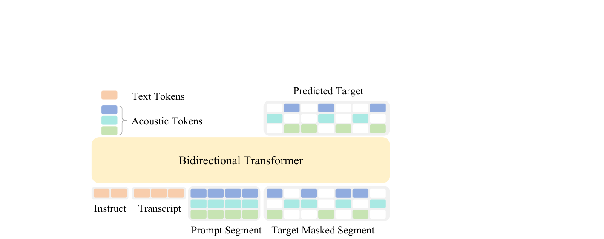
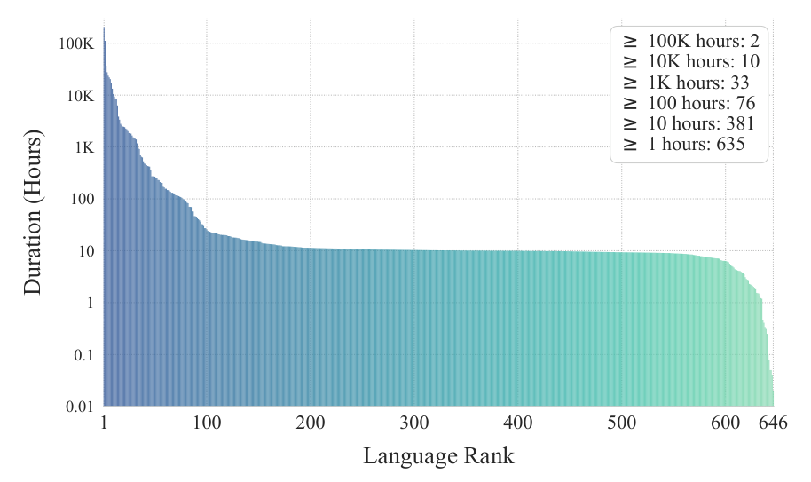
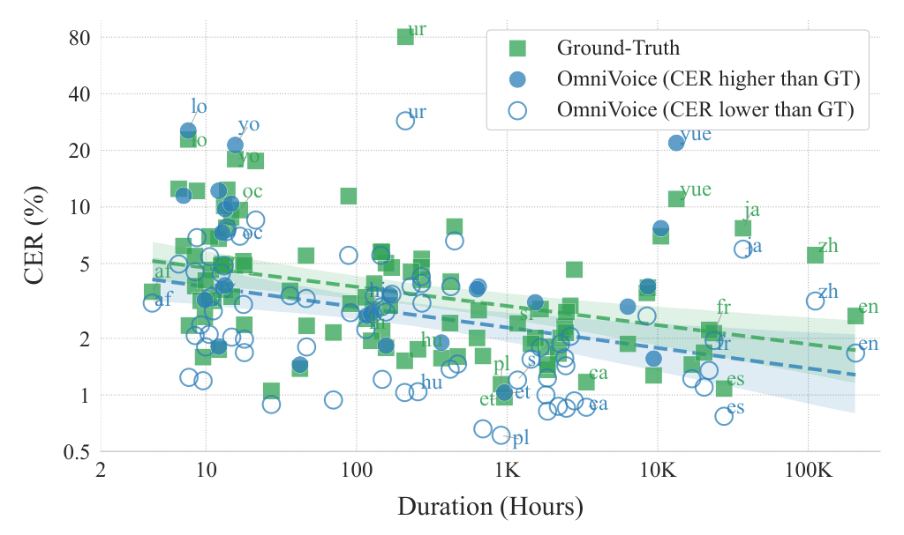

Han Zhu, Lingxuan Ye, Wei Kang, Zengwei Yao, Liyong Guo, Fangjun Kuang Zhifeng Han, Weiji Zhuang, Long Lin, Daniel Povey Xiaomi Corp., China {zhuhan3,dpovey}@xiaomi.com
摘要Abstract
We present OmniVoice, a massively multilingual zero-shot text-to-speech (TTS) model that scales to over 600 languages. At its core is a novel diffusion language model-style discrete non-autoregressive (NAR) architecture. Unlike conventional discrete NAR models that suffer from performance bottlenecks in complex twostage (text-to-semantic-to-acoustic) pipelines, OmniVoice directly maps text to multi-codebook acoustic tokens. This simplified approach is facilitated by two key technical innovations: (1) a full-codebook random masking strategy for efficient training, and (2) initialization from a pre-trained LLM to ensure superior intelligibility. By leveraging a 581k-hour multilingual dataset curated entirely from open-source data, OmniVoice achieves the broadest language coverage to date and delivers state-of-the-art performance across Chinese, English, and diverse multilingual benchmarks. Our code and pre-trained models are publicly available1.
我们提出 OmniVoice，一个大规模多语种的零样本文本转语音（TTS）模型，语言覆盖规模超过 600 种。其核心是一种新颖的扩散语言模型风格的离散非自回归（NAR）架构。传统的离散 NAR 模型在复杂的两阶段（文本到语义再到声学）流水线中存在性能瓶颈，与之不同，OmniVoice 直接将文本映射到多码本声学 token。这一简化的方案得益于两项关键技术创新：(1) 用于高效训练的全码本随机掩码策略；(2) 从预训练 LLM 初始化，以确保出色的可懂度。凭借一个完全来自开源数据的 581k 小时多语数据集，OmniVoice 实现了迄今最广的语言覆盖，并在中文、英文以及多样化的多语种基准上取得了 SOTA 表现。我们的代码和预训练模型已公开 [1]。
1 1 引言Introduction
Zero-shot text-to-speech (TTS) models trained on large-scale datasets have demonstrated a remarkable ability to generate high-quality speech conditioned on only a few seconds of reference audio [1, 2]. Despite these advances, most existing models support only a limited set of languages, often leaving hundreds of low-resource languages behind. Expanding language coverage is not merely a technical challenge but also a crucial step toward extending speech technologies to languages across the globe. To address this gap, we aim to develop a massively multilingual zero-shot TTS model supporting hundreds of languages. Realizing such extensive scaling requires a TTS architecture with exceptional capacity and robustness to handle diverse linguistic patterns.
在大规模数据集上训练的零样本文本转语音（TTS）模型，已展现出仅凭几秒钟参考音频即可生成高质量语音的出色能力 [1, 2]。尽管取得了这些进展，现有的大多数模型只支持有限的几种语言，往往把数百种低资源语言落在了后面。扩大语言覆盖不仅是一个技术挑战，更是把语音技术推广到全球各种语言的关键一步。为弥补这一缺口，我们的目标是开发一个支持数百种语言的大规模多语种零样本 TTS 模型。要实现如此大规模的扩展，需要一个具备出色容量与鲁棒性的 TTS 架构，以应对多样的语言模式。
In the pursuit of such scalable and high-quality TTS, current research primarily adheres to two paradigms: autoregressive (AR) [3, 4, 5, 6, 7, 8, 9, 10, 11] and non-autoregressive (NAR) models [12, 13, 14]. NAR models offer advantages in both inference speed (via parallel decoding) and robustness (owing to bidirectional context) [12, 14, 15]. Within NAR frameworks, models can be broadly categorized into continuous-latent-based [14, 16, 17, 18] and discrete-token-based [19]. The latter was shown to yield superior prosodic diversity [20].
在追求这种可扩展、高质量 TTS 的过程中，当前研究主要遵循两种范式：自回归（AR）模型 [3, 4, 5, 6, 7, 8, 9, 10, 11] 与非自回归（NAR）模型 [12, 13, 14]。NAR 模型在推理速度（通过并行解码）和鲁棒性（得益于双向上下文）两方面都有优势 [12, 14, 15]。在 NAR 框架内部，模型大体可以分为基于连续隐空间的 [14, 16, 17, 18] 和基于离散 token 的 [19] 两类。后者已被证明能带来更丰富的韵律多样性 [20]。
However, state-of-the-art (SOTA) discrete-token NAR systems [19] typically rely on complex twostage cascaded pipelines (text-to-semantic followed by semantic-to-acoustic). While such decoupling simplifies the training of individual modules, it also introduces significant drawbacks: (1) error propagation, where inaccuracies in semantic prediction degrade the final audio quality; and (2) information bottlenecks, where low-bitrate semantic representations sacrifice fine-grained acoustic details. While single-stage alternatives [21] attempt to bypass these issues, they have historically lagged behind two-stage systems in terms of speech intelligibility.
然而，最先进的离散 token NAR 系统 [19] 通常依赖复杂的两阶段级联流水线（先文本到语义，再语义到声学）。这种解耦虽然简化了各模块的训练，但也带来了明显的缺陷：(1) 误差传播，语义预测的偏差会降低最终音频质量；(2) 信息瓶颈，低比特率的语义表示会牺牲细粒度的声学细节。虽然单阶段方案 [21] 试图绕过这些问题，但历史上它们在语音可懂度上一直落后于两阶段系统。
1https://github.com/k2-fsa/OmniVoice Preprint. Under review.
[1] https://github.com/k2-fsa/OmniVoice 预印本。审稿中。
Text Tokens Acoustic Tokens Predicted Target Bidirectional Transformer Instruct Transcript Prompt Segment Target Masked Segment
文本 token、声学 token、预测目标、双向 Transformer、指令、转写文本、提示段、目标掩码段。

图Figure 1: Illustration of OmniVoice architecture.
图 1：OmniVoice 架构示意图。
To bridge this gap, we introduce OmniVoice, an architecturally streamlined yet highly effective discrete NAR TTS framework. OmniVoice employs a discrete masked diffusion objective [22] with a bidirectional Transformer [23] to directly map text to multi-codebook acoustic tokens, thereby bypassing the complexity and limitations of cascaded pipelines. Its core modeling philosophy extends the success of diffusion language models [24, 25] to the speech domain. We demonstrate that the potential of this minimalist architecture can be fully unleashed through two technical innovations: (1) Full-Codebook Random Masking: Conventional multi-codebook acoustic prediction methods adopt "per-layer" masking schedules [26, 19], suffering from inefficient convergence. We propose a fully stochastic masking strategy across all codebooks that significantly enhances training efficiency and generative quality. (2) LLM Initialization: To resolve the intelligibility issues in single-stage discrete NAR models, we initialize our backbone with pre-trained AR LLM weights to inherit linguistic knowledge, making OmniVoice the first NAR TTS model to successfully benefit from LLM initialization [3].
为弥合这一差距，我们提出 OmniVoice——一个架构精简但高度有效的离散 NAR TTS 框架。OmniVoice 采用离散掩码扩散目标 [22]，配合双向 Transformer [23]，直接将文本映射到多码本声学 token，从而绕开级联流水线的复杂性与固有局限。其建模理念的核心，是把扩散语言模型 [24, 25] 的成功经验延伸到语音领域。我们证明，通过两项技术创新可以充分释放这种极简架构的潜力：(1) 全码本随机掩码：传统的多码本声学预测方法采用「逐层」掩码调度 [26, 19]，收敛效率低下。我们提出一种跨全部码本的完全随机掩码策略，显著提升了训练效率与生成质量。(2) LLM 初始化：为解决单阶段离散 NAR 模型的可懂度问题，我们用预训练 AR LLM 的权重初始化骨干网络以继承语言知识，使 OmniVoice 成为首个成功受益于 LLM 初始化的 NAR TTS 模型 [3]。
The architectural advantage of OmniVoice makes it uniquely suited for scaling across diverse linguistic contexts. We curated a 581k-hour multilingual dataset encompassing more than 600 languages, derived exclusively from open-source resources. Training on this dataset allows OmniVoice to achieve the most extensive language coverage reported to date, bridging the gap for hundreds of previously under-served low-resource languages.
OmniVoice 的架构优势使其特别适合在多样的语言环境中规模化扩展。我们构建了一个 581k 小时的多语数据集，覆盖超过 600 种语言，且完全来自开源资源。在该数据集上训练使 OmniVoice 取得了迄今报道过的最广语言覆盖，为数百种此前缺乏服务的低资源语言弥合了鸿沟。
Beyond its extensive language coverage, OmniVoice supports multi-dimensional controllability, including prompt denoising [27, 28], speaker attribute-based voice design [29], and fine-grained paralinguistic and phonetic control [30, 31]. These features significantly enhance its versatility, making OmniVoice well-suited for a wide range of real-world applications.
除广泛的语言覆盖外，OmniVoice 还支持多维度的可控性，包括提示去噪 [27, 28]、基于说话人属性的声音设计 [29]，以及细粒度的副语言与语音学控制 [30, 31]。这些特性显著增强了模型的通用性，使 OmniVoice 适用于广泛的实际应用场景。
Comprehensive experimental evaluations across Chinese, English, and massively multilingual benchmarks (covering up to 102 languages) validate that OmniVoice delivers SOTA performance in intelligibility, speaker similarity and naturalness, setting a new frontier for high-quality, highcoverage multilingual TTS.
在中文、英文以及大规模多语种基准（覆盖多达 102 种语言）上的综合实验评估表明，OmniVoice 在可懂度、说话人相似度和自然度上均达到 SOTA 表现，为高质量、高覆盖的多语种 TTS 树立了新的前沿。
2 2 提出的方法Proposed Method
This section elaborates the design of OmniVoice. We first introduce the streamlined single-stage architecture that serves as the high-performance backbone for massively multilingual modeling, followed by two core technical optimizations to boost model training efficiency and speech intelligibility. On this basis, we further present the large-scale multilingual data construction and balancing strategies to realize extensive language coverage, and finally equip the model with multi-dimensional controllability for practical deployment.
本节详细阐述 OmniVoice 的设计。我们首先介绍作为大规模多语种建模高性能骨干的精简单阶段架构，随后给出两项核心技术优化，以提升模型的训练效率与语音可懂度。在此基础上，我们进一步介绍大规模多语数据的构建与均衡策略，以实现广泛的语言覆盖，最后为模型配备多维度的可控性，便于实际部署。
2.1 2.1 架构Architecture
OmniVoice is a single-stage NAR TTS model with a diffusion language model-style architecture [24, 25]. Specifically, the model is trained with discrete diffusion objective and adopts a bidirectional Transformer backbone. OmniVoice directly maps text to multi-codebook acoustic tokens, (a) Per-layer masking (b) Full-codebook random masking
OmniVoice 是一个单阶段 NAR TTS 模型，采用扩散语言模型风格的架构 [24, 25]。具体而言，模型以离散扩散目标进行训练，并采用双向 Transformer 骨干。OmniVoice 直接将文本映射到多码本声学 token，(a) 逐层掩码 (b) 全码本随机掩码。
Figure 2: Comparison of per-layer masking and full-codebook random masking. The x-axis denotes the time dimension, the y-axis the codebook dimension, and white blocks indicate masked tokens.
图 2：逐层掩码与全码本随机掩码的对比。横轴为时间维度，纵轴为码本维度，白色方块表示被掩码的 token。
eliminating the error propagation and information bottlenecks issues in conventional two-stage cascaded pipelines. This end-to-end streamlined architecture lays the foundation for large-scale multilingual modeling, with targeted optimizations and scaling strategies detailed in the subsequent sections.
从而消除了传统两阶段级联流水线中的误差传播与信息瓶颈问题。这种端到端的精简架构为大规模多语种建模奠定了基础，后续章节将详细介绍针对性的优化与规模化策略。
The architecture of OmniVoice is illustrated in Fig. 1. The input of OmniVoice comprises:
OmniVoice 的架构如图 1 所示。OmniVoice 的输入包括：
• Text token sequence (Y ): A concatenated sequence of instruct and transcript tokens, providing the linguistic and task-oriented guidance. • Acoustic token matrix (X): A multi-codebook matrix X ∈RT ×C, where T is the number of time steps and C is the number of codebooks.
• 文本 token 序列（Y）：由指令 token 与转写文本 token 拼接而成，提供语言层面与任务层面的引导。• 声学 token 矩阵（X）：一个多码本矩阵 X ∈ R^{T×C}，其中 T 是时间步数，C 是码本数。
The acoustic matrix X is partitioned along the temporal dimension into two segments: the prompt segment Xprompt, which contains the prefix acoustic context, and the target masked segment Xtarget, where tokens are randomly replaced with a special mask token [M]. The model is designed to leverage the text conditions Y , the prompt Xprompt and unmasked tokens in Xtarget to recover the original tokens in the masked position in Xtarget.
声学矩阵 X 沿时间维度被划分为两段：提示段 Xprompt（包含前缀声学上下文）与目标掩码段 Xtarget（其中的 token 被随机替换为特殊的掩码 token [M]）。模型的设计目标是利用文本条件 Y、提示段 Xprompt 以及 Xtarget 中未被掩码的 token，恢复 Xtarget 中掩码位置的原始 token。
The text tokens are embedded via a text embedding layer, and the acoustic tokens are embedded via codebook-specific embedding layers. The embeddings of all C codebooks at the same temporal position are summed to form a unified embedding, which is then fed into a bidirectional Transformer. On the output side, to reconstruct the multi-codebook tokens, OmniVoice employs C independent, codebook-specific prediction heads. Each head projects the final hidden states to output a probability distribution over the vocabulary of its corresponding codebook.
文本 token 经由文本嵌入层进行嵌入，声学 token 则经由各码本专属的嵌入层进行嵌入。同一时间位置上全部 C 个码本的嵌入被相加，形成统一嵌入，随后送入双向 Transformer。在输出侧，为重建多码本 token，OmniVoice 采用 C 个相互独立、码本专属的预测头。每个预测头将最终隐状态投影为对应码本词表上的概率分布。
The training loss is computed on the masked acoustic token positions, aiming to optimize the model for accurate token recovery. Let M denote the set of indices (t, c) corresponding to masked positions within the target segment, where t ∈{Tp + 1, . . . , T} and c ∈{1, . . . , C}. The training loss L is formulated as:
训练损失在被掩码的声学 token 位置上计算，目标是优化模型准确恢复 token 的能力。记 M 为目标段内被掩码位置的索引集合 (t, c)，其中 t ∈ {Tp + 1, . . . , T}，c ∈ {1, . . . , C}。训练损失 L 定义为：
L = − X(t,c)∈M log P(xt,c | X, Y ; θ) (1)where xt,c is the ground-truth acoustic token at time step t and codebook index c, and P(xt,c | . . . ; θ) is the probability distribution predicted by the model parameterized by θ.
其中 xt,c 是时间步 t、码本索引 c 处的真实声学 token，P(xt,c | . . . ; θ) 是由参数 θ 化的模型所预测的概率分布。
2.1.1 2.1.1 面向训练效率的全码本随机掩码Full-Codebook Random Masking for Training Efficiency
Masking design is critical for OmniVoice, as it directly determines the training pattern and loss function. Previous methods for multi-codebook acoustic token prediction typically employ a "perlayer" masking schedule [26, 19], which randomly masks within a single codebook layer c per sample and computes the loss exclusively for that layer. Tokens in layers above the selected layer are fully masked but excluded from loss computation. Such masking strategy is designed to align with the layer-wise inference. However, it optimizes only a sparse subset of the token matrix at each iteration, leading to suboptimal training efficiency.
掩码设计对 OmniVoice 至关重要，因为它直接决定了训练模式与损失函数。以往的多码本声学 token 预测方法通常采用「逐层」掩码调度 [26, 19]，即每个样本只在某一个码本层 c 内随机掩码，并且只对该层计算损失。高于所选层的各层中的 token 虽然被全部掩码，但不参与损失计算。这种掩码策略是为了与逐层推理方式对齐而设计的。然而，它每次迭代只优化 token 矩阵的一个稀疏子集，导致训练效率欠佳。
To circumvent this limitation, OmniVoice adopts a fully stochastic masking strategy across all codebook layers. Specifically, we independently sample a binary mask mi,j ∼Bernoulli(pt) for every entry in the T × C token matrix, where the masking ratio pt is drawn from a uniform distribution pt ∼U(0, 1) for each training instance. Consequently, on average, 50% of the tokens are used for 100K 10K Duration (Hours) 1K
为绕过这一限制，OmniVoice 在所有码本层上采用完全随机的掩码策略。具体地，我们为 T × C token 矩阵的每个元素独立采样二值掩码 m_{i,j} ∼ Bernoulli(p_t)，其中掩码率 p_t 对每个训练样本从均匀分布 p_t ∼ U(0, 1) 中抽取。因此平均有 50% 的 token 被用于（图横轴：时长 Duration (Hours)，刻度 1K / 10K / 100K。）
100 10 1 0.1原始表格文本（18 个单元格，PDF 抽取顺序，数字与原文一致；精确排版见原文 PDF）
100K hours: 2 10K hours: 10 1K hours: 33 100 hours: 76 10 hours: 381 1 hours: 635
1 100 200 300 400 500 600 646Language Rank0.01
图Figure 3: Statistics of the multilingual training dataset.
图 3：多语训练数据集的统计信息。
loss computation, C times more than per-layer masking strategy, significantly accelerating convergence and boosting generative quality.
损失计算的 token 数约为逐层掩码策略的 C 倍，显著加速了收敛并提升了生成质量。
2.1.2 2.1.2 面向可懂度的 LLM 初始化LLM Initialization for Intelligibility
Existing discrete NAR TTS models [19, 21], particularly single-stage architectures [21], often exhibit suboptimal intelligibility compared to their counterparts. To address this, we propose a simple yet effective strategy: initializing the model backbone with pre-trained AR large language models (LLMs) [32]. While LLM-based initialization has been successfully integrated into recent AR-TTS frameworks [3, 33], OmniVoice is the first NAR TTS model that successfully leverages LLM initialization to achieve notable intelligibility gains. Our backbone is structurally identical to standard AR LLMs, facilitating direct weight transfer. While these LLMs are originally trained with a causal mask, we empirically find that their pre-trained knowledge translates well to our bidirectional architecture. This initialization allows OmniVoice to repurpose LLM’s linguistic capacity as a strong prior for text-to-speech mapping, significantly enhancing the intelligibility of the generated speech.
现有的离散 NAR TTS 模型 [19, 21]——尤其是单阶段架构 [21]——与其他类型的模型相比，往往表现出欠佳的可懂度。为解决这一问题，我们提出一个简单却有效的策略：用预训练 AR 大语言模型（LLM）[32] 初始化模型骨干。虽然基于 LLM 的初始化已被成功引入近期的 AR-TTS 框架 [3, 33]，但 OmniVoice 是首个成功利用 LLM 初始化并获得显著可懂度提升的 NAR TTS 模型。我们的骨干在结构上与标准 AR LLM 完全一致，因此可以直接迁移权重。尽管这些 LLM 最初是用因果掩码训练的，但我们凭经验发现，其预训练知识可以很好地迁移到我们的双向架构中。这种初始化让 OmniVoice 能够把 LLM 的语言能力重新用作文本到语音映射的强先验，显著提升生成语音的可懂度。
2.2 2.2 多语种规模化Multilingual Scaling
A core objective of this work is to extend language support to over 600 languages, including hundreds of low-resource languages that are rarely supported in mainstream TTS systems. OmniVoice’s streamlined end-to-end architecture is inherently well-suited for such large-scale multilingual scaling.
本工作的核心目标之一，是把语言支持扩展到 600 种以上，其中包括数百种主流 TTS 系统很少支持的低资源语言。OmniVoice 精简的端到端架构天然适合这种大规模的多语种扩展。
Expanding language coverage of TTS is a long-standing challenge [34, 35, 36, 37, 38]. While MMS [39] scales to more than 1,000 languages, yet lacks zero-shot voice cloning capabilities and relies on language-specific modeling. Conversely, current multilingual zero-shot TTS models remain limited to narrow linguistic scopes, covering only a few dozen languages [40, 41, 36, 42, 33, 43, 38]. To bridge this gap, we introduce the first massively multilingual zero-shot TTS model capable of generalizing across hundreds of diverse languages within a single, unified model.
扩大 TTS 的语言覆盖是一个长期存在的挑战 [34, 35, 36, 37, 38]。MMS [39] 虽然扩展到超过 1,000 种语言，但不具备零样本声音克隆能力，且依赖特定于语言的建模。反过来看，当前的多语零样本 TTS 模型仍局限于狭窄的语言范围，只覆盖几十种语言 [40, 41, 36, 42, 33, 43, 38]。为弥合这一差距，我们提出首个大规模多语种零样本 TTS 模型，能够在单一统一模型内泛化到数百种差异巨大的语言。
Data acquisition remains one of the primary bottlenecks for large-scale multilingual expansion. To address this, we aggregated 50 datasets by leveraging open-source community efforts (see Appendix A for the complete list). Given the heterogeneous quality of these sources (many of which were not originally designed for TTS and contain noisy audio or transcriptions), we employed a speech restoration model [44] to enhance degraded speech and applied rule-based filtering [17] to exclude invalid transcriptions. The resulting corpus comprises 581k hours of audio spanning more than 600 languages (detailed statistics in Fig. 3). Training on this unprecedented dataset empowers OmniVoice to achieve the broadest language coverage reported to date, significantly advancing the SOTA in multilingual TTS.
数据获取仍是大规模多语种扩展的主要瓶颈之一。为此，我们借助开源社区的成果，聚合了 50 个数据集（完整清单见附录 A）。考虑到这些数据源质量参差不齐（许多并非为 TTS 设计，含有噪声音频或错误转写），我们使用语音修复模型 [44] 增强受损语音，并采用基于规则的过滤 [17] 剔除无效转写。最终得到的语料包含 581k 小时音频，覆盖超过 600 种语言（详细统计见图 3）。在这个前所未有的数据集上训练，使 OmniVoice 取得了迄今报道过的最广语言覆盖，显著推进了多语种 TTS 的 SOTA。
To mitigate the severe data imbalance inherent in massively multilingual datasets, where highresource languages vastly outnumber low-resource ones, we apply a language-level data resampling strategy. Specifically, we upsample the training data of low-resource languages by assigning a repetition factor, ri, to each language i. Let Di denote the total audio duration for language i, and Dmax represent the maximum duration across all languages. The repetition factor is formulated as:
大规模多语数据集中固有的数据失衡问题十分严重——高资源语言的数据量远超低资源语言；为缓解这一点，我们采用语言级数据重采样策略。具体而言，我们为每种语言 i 赋予一个重复因子 ri，对低资源语言的训练数据进行上采样。记 Di 为语言 i 的总音频时长，Dmax 为所有语言中的最大时长。重复因子定义为：
ri = max1, round
1，四舍五入（为公式 (2) 的抽取残留片段）。
Dmax1−β!!(2)Diwhere β ∈[0, 1] is a hyperparameter controlling the degree of smoothing. Setting β = 1.0 retains the natural long-tail distribution of the dataset, whereas β = 0.0 yields a uniform distribution across all languages. In our implementation, we empirically set β = 0.8 to keep the performance of highresource languages while ensuring adequate model exposure to low-resource languages.
其中 β ∈ [0, 1] 是控制平滑程度的超参数。设 β = 1.0 时保留数据集天然的长尾分布，而 β = 0.0 则得到所有语言上的均匀分布。在我们的实现中，经验性地取 β = 0.8，在保持高资源语言性能的同时，确保模型对低资源语言有充分的接触。
For multilingual text processing, we employ the subword tokenizer of pre-trained LLMs, eliminating cumbersome grapheme-to-phoneme conversion and language-specific text normalization. This strategy also allows the LLM backbone to inherit and leverage its pre-trained knowledge efficiently.
在多语文本处理方面，我们直接采用预训练 LLM 的子词分词器，避免了繁琐的字位到音素转换和特定语言的文本规范化。这一策略也让 LLM 骨干能够高效地继承并利用其预训练知识。
2.3 2.3 多维度可控性Multi-Dimensional Controllability
Beyond its extensive multilingual coverage, we further equip OmniVoice with multi-dimensional controllability across acoustic, identity, and linguistic aspects. This comprehensive control mechanism significantly improves the model’s practicality for complex, real-world applications.
除广泛的多语种覆盖外，我们还为 OmniVoice 配备了声学、身份与语言三个方面的多维度可控性。这套完整的控制机制显著提升了模型在复杂的真实应用场景中的实用性。
2.3.1 2.3.1 声学控制：提示去噪Acoustic Control: Prompt Denoising
In practical scenarios, audio prompts are often recorded in non-ideal conditions, potentially compromised by environmental noise or reverberation. To prevent the model from replicating these unwanted artifacts, we implement a prompt denoising task [27, 28]. During training, we augment a subset of the data by injecting synthetic noise and reverberation into the prompt segments. These samples are paired with a specific instruction token, <|denoise|>. This mechanism compels the model to disentangle the speaker’s intrinsic voice identity from the acoustic environment, enabling the synthesis of clean, high-fidelity speech even when conditioned on degraded prompts.
在实际场景中，音频提示往往在非理想条件下录制，可能受到环境噪声或混响的影响。为防止模型复现这些不想要的瑕疵，我们实现了提示去噪任务 [27, 28]。训练时，我们对部分数据进行增强，向提示段注入合成噪声与混响。这些样本与一个特定的指令 token <|denoise|> 配对。这一机制迫使模型把说话人内在的音色身份与声学环境解耦，使得即使在退化的提示条件下，也能合成干净、高保真的语音。
2.3.2 2.3.2 身份控制：基于说话人属性的声音设计Identity Control: Speaker-Attribute-Based Voice Design
To enable flexible TTS in the absence of an audio prompt, OmniVoice supports speaker-attributebased voice design [29, 42]. By incorporating specific speaker attributes (e.g., gender, age, pitch, and accent/dialect) into the training instruction sequence, the model can synthesize highly customized voices on demand.
为在没有音频提示的情况下也能灵活合成语音，OmniVoice 支持基于说话人属性的声音设计 [29, 42]。通过把具体的说话人属性（如性别、年龄、音高以及口音/方言）纳入训练指令序列，模型可以按需合成高度定制化的声音。
2.3.3 2.3.3 语言控制：副语言与语音学Linguistic Control: Paralinguistics and Phonetics
To bridge the gap between basic intelligibility and human-like expressiveness, we incorporate paralinguistic control (e.g., laughter) by training on datasets enriched with affective cues [30, 45].
为弥合基础可懂度与类人表现力之间的差距，我们引入副语言控制（如笑声），通过在富含情感线索的数据集 [30, 45] 上训练来实现。
Furthermore, recognizing that models may occasionally encounter challenges with the pronunciation of linguistic corner cases, such as Chinese polyphonic characters or specialized English terminology, we adopt a hybrid text input format [31] to provide users with explicit phonetic override capabilities. During training, we stochastically replace characters or words with their corresponding phonetic transcriptions, specifically Pinyin for Chinese and phonemes from the CMU pronunciation dictionary for English. This mechanism allows for deterministic control over pronunciation during inference, enabling the model to handle complex linguistic scenarios with high precision.
此外，考虑到模型偶尔会在一些语言学的边角案例上遇到发音困难——例如中文多音字或专业英文术语，我们采用混合文本输入格式 [31]，为用户提供显式的发音覆盖能力。训练时，我们随机地把字符或单词替换为对应的语音转写——中文用拼音，英文用 CMU 发音词典的音素。该机制使得推理时可以确定性地控制发音，让模型能够以高精度处理复杂的语言场景。
3 3 实验设置Experimental Setup
This section details the training datasets, model configurations, training and inference protocols, evaluation benchmarks, and evaluation metrics of our experiments.
本节详细介绍实验所用的训练数据集、模型配置、训练与推理协议、评估基准以及评估指标。
3.1 3.1 训练数据集Training Datasets
We train OmniVoice under two distinct data configurations. First, a bilingual variant is trained on the Chinese and English subsets of the Emilia dataset [46], enabling fair comparison with existing SOTA zero-shot TTS models trained on the same data. Prompt denoising is omitted in this variant to isolate its impact and highlight the inherent advantages of our architecture. Second, a multilingual variant is trained on a self-built 581k-hour multilingual dataset spanning 600+ languages.
我们在两种不同的数据配置下训练 OmniVoice。第一种是双语变体，在 Emilia 数据集 [46] 的中英文子集上训练，以便与在相同数据上训练的现有 SOTA 零样本 TTS 模型进行公平对比。该变体中不使用提示去噪，以隔离其影响、凸显我们架构的固有优势。第二种是多语变体，在自建的 581k 小时多语数据集上训练，覆盖 600+ 种语言。
3.2 3.2 模型细节Model Details
OmniVoice is built on a bidirectional Transformer backbone, which is initialized with the pre-trained LLM weights of Qwen3-0.6B [32]. The Higgs-audio tokenizer [47] is adopted to extract 8-codebook acoustic tokens and reconstruct audio from these tokens.
OmniVoice 构建在双向 Transformer 骨干之上，以 Qwen3-0.6B [32] 的预训练 LLM 权重进行初始化。我们采用 Higgs-audio 分词器 [47] 提取 8 码本声学 token，并由这些 token 重建音频。
3.3 3.3 训练Training
The AdamW optimizer [48] is used, with a peak learning rate of 1e −4 and a cosine learning rate schedule that includes 3% of total training steps as warmup. Mixed precision (BF16) and sequence packing (8192 tokens per GPU) are employed during training to improve efficiency. Using 8 H800 GPUs, the multilingual variant (2M training updates) and the bilingual Emilia variant (300k training updates) were trained in 9.66 days and 1.33 days, respectively.
优化器采用 AdamW [48]，峰值学习率为 1e-4，使用余弦学习率调度，其中总训练步数的 3% 用于预热。训练中采用混合精度（BF16）与序列打包（每 GPU 8192 个 token）以提升效率。使用 8 张 H800 GPU，多语变体（2M，即 200 万次训练更新）与双语 Emilia 变体（300k，即 30 万次训练更新）分别训练了 9.66 天和 1.33 天。
3.4 3.4 推理Inference
During inference, we perform a 32-steps iterative unmasking process. The cumulative proportion of unmasked tokens at step n, denoted as rn, follows a time-shifted schedule that was originally used in [16]:
推理时，我们执行 32 步的迭代式去掩码过程。第 n 步已去掩码 token 的累计比例记为 rn，遵循 [16] 最初使用的时移调度：
rn = τ · (n/N) 1 + (τ −1) · (n/N) (3)where N = 32 is the total number of steps, and τ = 0.1 is the shift parameter. The proportion of tokens to be newly unmasked at each step n is given by kn = rn −rn−1, where r0 = 0.
其中 N = 32 为总步数，τ = 0.1 为位移参数。第 n 步新去掩码 token 的比例为 kn = rn − rn−1，其中 r0 = 0。
The selection of unmasking positions and token identities is handled as follows:
去掩码位置的选择与 token 的取值按如下方式处理：
• Position Selection: At each step, we identify kn positions to be unmasked by sampling from the confidence scores in the log-softmax space. To introduce beneficial stochasticity and avoid local optima, we apply a temperature T = 5 to the confidence scores before sampling the indices.
• 位置选择：每一步，我们从 log-softmax 空间中的置信度分数里采样，选出 kn 个待去掩码的位置。为引入有益的随机性并避免局部最优，我们在采样位置索引前对置信度分数施加温度 T = 5。
• Token Assignment: Once the positions are selected, the specific token class for each position is determined deterministically by taking the argmax of the predicted probability distribution.
• token 赋值：位置选定后，每个位置的具体 token 类别通过对预测概率分布取 argmax 确定性地决定。
We also apply a layer penalty on the confidence scores to encourage unmasking lower-layer tokens first. Furthermore, classifier-free guidance [49] is utilized in the log-softmax space with a guidance scale of 2. All aforementioned strategies are verified to effectively improve model performance and generation stability.
我们还在置信度分数上施加层惩罚，以鼓励先去掩码低层 token。此外，我们在 log-softmax 空间中使用无分类器引导 [49]，引导强度为 2。上述所有策略均被验证能有效提升模型性能与生成稳定性。
During inference, each character is assigned a script-dependent duration weight w(c) to reflect intrinsic duration differences across writing systems (e.g., CJK, Latin). Given the prompt audio duration Dprompt, the target duration Dtarget is estimated by scaling with the ratio of total character weights:
推理时，每个字符被赋予一个依书写体系而异的时长权重 w(c)，以反映不同文字系统（如 CJK、拉丁字母）固有的时长差异。给定提示音频时长 Dprompt，目标时长 Dtarget 通过字符总权重之比进行缩放估计：
Dtarget = Dprompt · WtargetWprompt (4)where Wtarget = P c∈Target w(c) and Wprompt = P c∈Prompt w(c).3.4.1 3.4.1 评估基准Evaluation Benchmarks
We evaluate OmniVoice on four benchmarks covering standard Chinese/English settings and massively multilingual scenarios:
我们在四个基准上评估 OmniVoice，覆盖标准的中英文场景与大规模多语种场景：
• LibriSpeech-PC [50, 14]: A standard English zero-shot TTS benchmark.
• LibriSpeech-PC [50, 14]：标准的英文零样本 TTS 基准。
• Seed-TTS [2]: A bilingual (Chinese/English) zero-shot benchmark.
• Seed-TTS [2]：双语（中/英文）零样本基准。
• MiniMax-Multilingual-24[51]: A multilingual benchmark covering 24 languages.
• MiniMax-Multilingual-24 [51]：覆盖 24 种语言的多语基准。
• FLEURS-Multilingual-102: A 102-language multilingual benchmark constructed from the dev/test splits of the FLEURS dataset [52] to further evaluate OmniVoice’s multilingual capability. It is the zero-shot TTS evaluation benchmark with the widest language coverage to date.
• FLEURS-Multilingual-102：由 FLEURS 数据集 [52] 的 dev/test 划分构建的 102 语种多语基准，用于进一步评估 OmniVoice 的多语种能力。它是迄今语言覆盖最广的零样本 TTS 评估基准。
3.5 3.5 评估指标Evaluation Metrics
Our evaluation combines several objective and subjective metrics. For speaker similarity evaluation, we use SIM-o [12] with a WavLM-based [53] ECAPA-TDNN model [54]. Intelligibility is measured using word error rate (WER) or character error rate (CER) across different languages. For brevity and consistency, we refer to both WER and CER as WER for datasets using both metrics (SeedTTS and MiniMax-Multilingual-24), while evaluating each language with its appropriate metric. Specifically, we use the Hubert-based ASR model [55] for LibriSpeech-PC test-clean, Paraformerzh [56] for Chinese, the Omnilingual ASR model [57] for the FLEURS benchmark, and Whisperlarge-v3 [58] for the remaining datasets. We also adopt UTMOS [59] to assess objective speech naturalness.
我们的评估结合了多项客观与主观指标。说话人相似度评估采用 SIM-o [12]，使用基于 WavLM [53] 的 ECAPA-TDNN 模型 [54]。可懂度按不同语言用词错误率（WER）或字错误率（CER）衡量。为简洁与一致起见，对同时使用两种指标的数据集（SeedTTS 与 MiniMax-Multilingual-24），我们把 WER 和 CER 统称为 WER，但对每种语言使用与其相适应的指标。具体而言，LibriSpeech-PC test-clean 使用基于 Hubert 的 ASR 模型 [55]，中文使用 Paraformer-zh [56]，FLEURS 基准使用 Omnilingual ASR 模型 [57]，其余数据集使用 Whisper large-v3 [58]。我们还采用 UTMOS [59] 评估客观的语音自然度。
These objective metrics are supplemented with subjective evaluations, including comparative mean opinion score (CMOS, [−3, 3]) and similarity mean opinion score (SMOS, [0, 5]), which measure human opinions on relative speech quality and absolute speaker similarity to the prompt audio.
这些客观指标之外，还辅以主观评估，包括比较平均意见分（CMOS，[−3, 3]）与相似度平均意见分（SMOS，[0, 5]），分别衡量人类对相对语音质量的评价，以及与提示音频的绝对说话人相似度。
4 4 实验结果Experimental Results
4.1 4.1 英文与中文评估Evaluation on English and Chinese
Table 1 and Table 2 summarize the Chinese and English performance of OmniVoice in comparison with SOTA AR/NAR TTS models.
表 1 与表 2 汇总了 OmniVoice 与 SOTA AR/NAR TTS 模型在中文和英文上的性能对比。
OmniVoice-Emilia surpasses all NAR baselines (F5-TTS [14], ZipVoice [16], MaskGCT [19]) trained on the same Emilia corpus, verifying the effectiveness of our proposed architecture.
OmniVoice-Emilia 超越了所有同样在 Emilia 语料上训练的 NAR 基线（F5-TTS [14]、ZipVoice [16]、MaskGCT [19]），验证了我们所提架构的有效性。
The final multilingual version OmniVoice model yields competitive overall performance across all benchmarks against baselines trained on unconstrained datasets (IndexTTS2 [5], CosyVoice3 [33], VoxCPM [10], Qwen3-TTS [42]), with particular advantages in speaker similarity and intelligibility. This demonstrates OmniVoice’s strong capability on the two most high-resource languages.
最终的多语版 OmniVoice 模型，与在无约束数据集上训练的基线（IndexTTS2 [5]、CosyVoice3 [33]、VoxCPM [10]、Qwen3-TTS [42]）相比，在所有基准上都取得了有竞争力的整体表现，并在说话人相似度与可懂度上具有明显优势。这展示了 OmniVoice 在两种资源最丰富语言上的强大能力。
4.2 4.2 多语基准评估Evaluation on Multilingual Benchmarks
We validate OmniVoice’s multilingual capability on the 24-language MiniMax-Multilingual-24 benchmark and the 102-language FLEURS-Multilingual-102 benchmark.
我们在 24 语种的 MiniMax-Multilingual-24 基准与 102 语种的 FLEURS-Multilingual-102 基准上验证 OmniVoice 的多语种能力。
As shown in Table 3, despite being trained exclusively on open-source datasets, OmniVoice clearly outperforms leading commercial systems (ElevenLabs Multilingual v2 and MiniMax-Speech) in both average SIM-o and WER, demonstrating that OmniVoice achieves commercial-grade multilingual TTS performance. While Cantonese shows a higher WER in the table, our analysis reveals that this is due to limitations in the Whisper ASR model rather than the quality of the generated speech. When evaluated with the SenseVoice-Small ASR model [60], the WER for Cantonese decreases to 2.273%. However, to maintain consistency with the benchmarks in [51], we retain the Whisper-based results in our report.
如表 3 所示，尽管完全在开源数据集上训练，OmniVoice 在平均 SIM-o 与 WER 两项上都明显优于领先的商业系统（ElevenLabs Multilingual v2 与 MiniMax-Speech），表明 OmniVoice 达到了商业级的多语 TTS 性能。虽然表中粤语的 WER 偏高，但我们的分析表明，这是 Whisper ASR 模型的局限所致，而非生成语音质量的问题。改用 SenseVoice-Small ASR 模型 [60] 评估时，粤语的 WER 降至 2.273%。不过，为与 [51] 中的基准保持一致，我们在报告中仍保留基于 Whisper 的结果。
Next, we evaluate OmniVoice on our self-built FLEURS-Multilingual-102 benchmark. We report the average SIM-o, average CER, and the number of languages below specific CER thresholds in Table 4. We observe that OmniVoice achieves an average CER of 4.00%, which is comparable to that of the ground truth. Per-language CER results are provided in Appendix C.
接下来，我们在自建的 FLEURS-Multilingual-102 基准上评估 OmniVoice。我们在表 4 中报告平均 SIM-o、平均 CER，以及 CER 低于特定阈值的语言数量。我们观察到 OmniVoice 的平均 CER 为 4.00%，与真实语音的水平相当。逐语言的 CER 结果见附录 C。
To better understand OmniVoice’s performance, we plot a figure illustrating the relationship between per-language CER and training data duration in Fig. 4. It can be seen that OmniVoice maintains high
为更好地理解 OmniVoice 的表现，我们在图 4 中绘制了逐语言 CER 与训练数据时长之间的关系。可以看到，OmniVoice 保持了较高的（句意延续到后文）。
Table 1: Objective evaluation results on Chinese and English test sets. Baseline results are obtained using official checkpoints. Params. (Parameters) denotes the total parameter size of voice cloning TTS systems (including audio tokenizer, vocoder, and other related components). Best results are highlighted in bold. Top: Results on LibriSpeech-PC. Bottom: Results on Seed-TTS test sets.
表 1：中英文测试集上的客观评估结果。基线结果使用官方 checkpoint 获得。Params.（参数）表示声音克隆 TTS 系统的总参数规模（包括音频分词器、声码器及其他相关组件）。最优结果以粗体标出。上：LibriSpeech-PC 上的结果。下：Seed-TTS 测试集上的结果。
| LibriSpeech-PC test-clean | ||||||
|---|---|---|---|---|---|---|
| Model | Params. | Training Data (hours) | ||||
| SIM-o ↑ | WER ↓ | UTMOS ↑ | ||||
| Ground-truth | - | - | 0.690 | 1.87 | 4.10 |
ModelModel
Ground-truthGround-truth
AR 模型AR Models
IndexTTS2 1.7B 55k Multi.
（表格行）IndexTTS2 1.7B、55k 小时、Multi.。
0.700 2.35 4.06CosyVoice3 1.1B 1000k Multi.
（表格行）CosyVoice3 1.1B、1000k 小时、Multi.。
0.694 1.59 4.28VoxCPM 0.7B 1800k Multi.
（表格行）VoxCPM 0.7B、1800k 小时、Multi.。
0.717 1.74 4.18Qwen3-TTS 1.1B 5000k Multi.
（表格行）Qwen3-TTS 1.1B、5000k 小时、Multi.。
0.704 1.604.41 3.46 NAR 模型NAR Models
F5-TTS 0.4B 100K Emilia
（表格行）F5-TTS 0.4B、100K 小时、Emilia。
0.655 1.89 3.89ZipVoice 0.1B 100k Emilia0.668 1.64 3.98MaskGCT 2.2B 100K Emilia0.691 2.26 3.91OmniVoice-Emilia 0.8B 100k Emilia0.697 1.57 4.23OmniVoice 0.8B 581k Multi.
（表格行）OmniVoice 0.8B、581k 小时、Multi.。
0.729 1.30 4.28ModelModel
Seed-TTS test-en Seed-TTS test-zh SIM-o ↑ WER ↓ UTMOS ↑ SIM-o ↑ WER ↓ UTMOS ↑
表头：Seed-TTS test-en（SIM-o↑ / WER↓ / UTMOS↑）× Seed-TTS test-zh（SIM-o↑ / WER↓ / UTMOS↑）。
Ground-truthGround-truth
0.734 2.14 3.52 0.755 1.25 2.78AR 模型AR Models
IndexTTS2
最终的多语版 OmniVoice 模型，与在无约束数据集上训练的基线（IndexTTS2 [5]、CosyVoice3 [33]、VoxCPM [10]、Qwen3-TTS [42]）相比，在所有基准上都取得了有竞争力的整体表现，并在说话人相似度与可懂度上具有明显优势。
0.706 2.33 3.65 0.764 1.05 3.00CosyVoice30.696 2.17 3.96 0.778 1.14 3.32VoxCPM0.731 1.92 3.77 0.772 0.99 2.94Qwen3-TTS0.708 1.54 4.16 0.766 1.153.46 3.46 NAR 模型NAR Models
Table 2: Subjective evaluation results on Chinese and English test sets. CMOS and SMOS are used for evaluation. Best results are highlighted in bold.
表 2：中英文测试集上的主观评估结果。采用 CMOS 与 SMOS 进行评估。最优结果以粗体标出。
| F5-TTS | 0.664 | 1.85 | 3.72 | 0.750 | 1.53 | 2.93 | |
| ZipVoice | 0.697 | 1.70 | 3.82 | 0.751 | 1.40 | 3.15 | |
| MaskGCT | 0.713 | 2.88 | 3.55 | 0.773 | 2.40 | 2.63 | |
| OmniVoice-Emilia 0.717 | 1.72 | 3.88 | 0.765 | 0.89 | 3.05 | ||
| OmniVoice | 0.741 | 1.60 | 3.91 | 0.777 | 0.84 | 3.11 |
ModelModel
CMOS ↑ SMOS ↑ Ground-truth
（表格：CMOS↑/SMOS↑——Ground-truth 0.00/3.02±0.20；Qwen3-TTS 0.40±0.16/3.65±0.18；ZipVoice -0.30±0.16/3.35±0.19；MaskGCT -0.38±0.17/3.20±0.18；OmniVoice-Emilia 0.42±0.15/3.58±0.18；OmniVoice 0.44±0.16/3.80±0.17。）即使许多语言训练数据不足 10 小时，仍保持高可懂度（CER < 5%），展现了对低资源语言的强泛化能力。
0.00 3.02±0.20Qwen3-TTS0.40± 0.16 3.65 ± 0.18-0.30± 0.16 3.35± 0.19-0.38± 0.17 3.20± 0.180.42± 0.15 3.58± 0.180.44± 0.16 3.80± 0.17intelligibility (CER < 5%) even for many languages with less than 10 hours of training data, demonstrating strong generalization capability on low-resource languages. Note that we do not claim OmniVoice can generate speech of better quality than the ground truth for all languages. However, OmniVoice’s performance has exceeded the measurement capability of existing ASR models.
（表格：CMOS↑/SMOS↑——Ground-truth 0.00/3.02±0.20；Qwen3-TTS 0.40±0.16/3.65±0.18；ZipVoice -0.30±0.16/3.35±0.19；MaskGCT -0.38±0.17/3.20±0.18；OmniVoice-Emilia 0.42±0.15/3.58±0.18；OmniVoice 0.44±0.16/3.80±0.17。）即使许多语言训练数据不足 10 小时，仍保持高可懂度（CER < 5%），展现了对低资源语言的强泛化能力。需要说明的是，我们并不声称 OmniVoice 在所有语言上都能生成比真实语音质量更好的语音。然而，OmniVoice 的表现已经超出现有 ASR 模型的测量能力。
Table 3: Evaluation on the MiniMax-Multilingual-24 test set.
表 3：MiniMax-Multilingual-24 测试集上的评估结果。
| WER ↓ | SIM-o ↑ | |||||
|---|---|---|---|---|---|---|
| Language | ||||||
| Arabic | 1.392 | 1.665 | 1.666 | 0.776 | 0.736 | 0.706 |
| 0.838 | 0.778 | 0.670 | ||||
| Chinese | 1.008 | 2.252 | 16.026 | 0.821 | 0.780 | 0.677 |
| Czech | 2.856 | 3.875 | 2.108 | 0.837 | 0.796 | 0.685 |
| Dutch | 1.358 | 1.143 | 0.803 | 0.813 | 0.738 | 0.680 |
| English | 1.560 | 2.164 | 2.339 | 0.884 | 0.756 | 0.613 |
| Finnish | 3.750 | 4.666 | 2.964 | 0.864 | 0.835 | 0.759 |
| French | 3.347 | 4.099 | 5.216 | 0.801 | 0.628 | 0.535 |
| German | 0.964 | 1.906 | 0.572 | 0.812 | 0.733 | 0.614 |
| Greek | 1.057 | 2.016 | 0.991 | 0.867 | 0.826 | 0.733 |
| Hindi | 4.330 | 6.962 | 5.827 | 0.863 | 0.818 | 0.730 |
| 1.237 | 1.059 | 0.805 | 0.729 | 0.660 | ||
| Italian | 2.070 | 1.543 | 1.743 | 0.812 | 0.699 | 0.579 |
| Japanese | 4.027 | 3.519 | 10.646 | 0.828 | 0.776 | 0.738 |
| Korean | 2.651 | 1.747 | 1.865 | 0.828 | 0.776 | 0.700 |
| Polish | 0.874 | 1.415 | 0.766 | 0.877 | 0.802 | 0.729 |
| 1.877 | 1.331 | 0.859 | 0.805 | 0.711 | ||
| Romanian | 2.424 | 2.878 | 1.347 | 0.836 | 0.809 | 0.699 |
| Russian | 2.233 | 4.281 | 3.878 | 0.783 | 0.761 | 0.676 |
| Spanish | 1.026 | 1.029 | 1.084 | 0.804 | 0.762 | 0.615 |
| Thai | 3.978 | 2.701 | 73.936 | 0.841 | 0.800 | 0.588 |
| Turkish | 2.166 | 1.520 | 0.699 | 0.851 | 0.779 | 0.596 |
| Ukrainian | 1.774 | 1.082 | 0.997 | 0.810 | 0.730 | 0.647 |
| 0.880 | 73.415 | 0.804 | 0.743 | 0.369 |
Language WER ↓ SIM-o ↑ OmniVoice MiniMax ElevenLabs OmniVoice MiniMax ElevenLabs Arabic
表头：Language × WER ↓ / SIM-o ↑（OmniVoice / MiniMax / ElevenLabs 两组）——Arabic（后续照原文）。
Cantonese17.709* 34.111 51.513 0.838 0.778 0.670IndonesianPortugueseVietnamese平均值Average
2.850 3.774 10.950 0.830 0.766 0.655* Cantonese WER is 2.273% when evaluated with the SenseVoice-Small ASR model. ur
（表注：* 粤语（Cantonese）用 SenseVoice-Small ASR 模型评测时 WER 为 2.273%。）（表格行）ur。
80 40lo ur yo lo20yo oc Ground-Truth OmniVoice (CER higher than GT) OmniVoice (CER lower than GT) yue yue ja ny zh ja ny zh CER (%)
（图例：Ground-Truth / OmniVoice (CER higher than GT) / OmniVoice (CER lower than GT)；语种：yue / ja / ny / zh；纵轴 CER (%)；yo / oc。）
10oc5af fr hi hu hi af2hu1en sl en fr sl pl ca es et et ca es pl
（图内语种标签：en / sl / en / fr / sl / pl / ca / es / et / et / ca / es / pl。）
2 10 1001K 10K 100K Duration (Hours)0.5
图Figure 4: CERs of OmniVoice vs. ground truth across languages with varying training data durations on FLEURS-Multilingual-102. Hollow circles indicate languages where OmniVoice achieves lower CER than ground-truth, Filled circles indicate higher CER.
图 4：在 FLEURS-Multilingual-102 上，不同训练数据时长下 OmniVoice 与真实语音的逐语言 CER 对比。空心圆表示 OmniVoice 的 CER 低于真实语音的语言，实心圆表示 CER 更高的语言。
Table 4: Evaluation on the FLEURS-Multilingual-102 test set.
表 4：FLEURS-Multilingual-102 测试集上的评估结果。
| FLEURS-Multilingual-102 | ||||||
|---|---|---|---|---|---|---|
| Model | ||||||
| Languages with CER ≤ | ||||||
| Avg SIM-o ↑ | Avg CER ↓ | |||||
| 5% | 10% | |||||
| Ground-truth | - | 5.11 | 75 | 92 | ||
| OmniVoice | 0.788 | 4.00 | 82 | 95 |
ModelModel
5%（表格碎块小节）5%
4.3 4.3 关键设计的有效性Effectiveness of Key Designs
To validate the effectiveness of our core designs, we conduct ablation experiments on the Emilia dataset. All models are trained for 300k updates with the same hyperparameters, with prompt denoising disabled unless otherwise specified.
为验证核心设计的有效性，我们在 Emilia 数据集上进行了消融实验。所有模型均以相同超参数训练 300k 次更新，除特别说明外均关闭提示去噪。
Table 5: Impact of different masking strategies.
表 5：不同掩码策略的影响。
| Languages with CER ≤ | |||||||
|---|---|---|---|---|---|---|---|
| Avg SIM-o ↑ | Avg CER ↓ | ||||||
| 5% | 10% | ||||||
| Ground-truth | - | 5.11 | 75 | 92 | |||
| OmniVoice | 0.788 | 4.00 | 82 | 95 | |||
| 4.3 | Effectiveness of Key Designs | ||||||
| To validate the effectiveness of our core designs, we conduct ablation experiments on the | |||||||
| dataset. | All models are trained for 300k updates with the same hyperparameters, with | ||||||
| noising disabled unless otherwise specified. |
掩码策略Masking Strategy
Librispeech-PC test-clean SIM-o ↑ WER ↓ UTMOS ↑ SoundStorm-style mask
（表格：Librispeech-PC test-clean × SIM-o↑/WER↓/UTMOS↑——SoundStorm 式掩码 0.661/3.00/4.12；MaskGCT 式掩码 0.660/2.04/4.17；全码本随机掩码 0.697/1.57/4.23；- 单码本计算损失 0.648/2.85/4.22。）首先比较不同掩码策略，验证所提全码本随机掩码策略的有效性。
0.661 3.00 4.12MaskGCT-style mask0.660 2.04 4.17Full-codebook random mask0.697 1.57 4.23- compute loss on a single codebook0.648 2.85 4.22Firstly, we compare different masking strategies to validate the effectiveness of our proposed fullcodebook random masking strategy. SoundStorm-style masking is a variant of the per-layer masking strategy, which samples layers for loss computation from a uniform distribution and selects the masking ratio according to a cosine function. MaskGCT-style masking further samples layers based on a linear distribution, where lower layers are selected with higher probability.
（表格：Librispeech-PC test-clean × SIM-o↑/WER↓/UTMOS↑——SoundStorm 式掩码 0.661/3.00/4.12；MaskGCT 式掩码 0.660/2.04/4.17；全码本随机掩码 0.697/1.57/4.23；- 单码本计算损失 0.648/2.85/4.22。）首先比较不同掩码策略，验证所提全码本随机掩码策略的有效性。SoundStorm 式掩码是逐层掩码策略的一种变体，它从均匀分布中采样参与损失计算的层，并按余弦函数选择掩码比例。MaskGCT 式掩码进一步按线性分布采样层，低层被选中的概率更高。
As shown in Table 5, full-codebook random masking consistently outperforms the single-codebook masking strategies adopted by MaskGCT and SoundStorm. Furthermore, we conduct an experiment where the loss is calculated only on a single codebook, which also results in significant performance degradation, confirming the advantages of the proposed dense loss computation.
如表 5 所示，全码本随机掩码一致优于 MaskGCT 与 SoundStorm 所采用的单码本掩码策略。此外，我们还进行了一个只在单码本上计算损失的实验，结果同样出现显著的性能下降，证实了所提密集损失计算的优势。
Table 6: Impact of LLM initialization on WER across datasets. Abbreviations: Libri = LibrispeechPC test-clean, Seed-en = Seed-TTS test-en, Seed-zh = Seed-TTS test-zh.
表 6：LLM 初始化对各数据集 WER 的影响。缩写：Libri = LibriSpeech-PC test-clean，Seed-en = Seed-TTS test-en，Seed-zh = Seed-TTS test-zh。
| WER ↓ | ||||
|---|---|---|---|---|
| Learning Rate | ||||
| Libri | Seed-en | Seed-zh | ||
| LLM initialization | 1e-4 | 1.57 | 1.72 | 0.89 |
| 1e-4 | 2.79 | 2.34 | 1.11 | |
| 2e-4 | 2.52 | 2.43 | 1.01 | |
| Random initialization | ||||
| 5e-4 | 2.56 | 2.07 | 1.01 | |
| 1e-3 | 2.72 | 2.29 | 1.02 |
ModelModel
Libri（表格碎块小节）Libri
Random initialization We illustrate the importance of LLM initialization for high intelligibility (i.e., low WER) in Table 6. It can be observed that even after extensive learning rate tuning, the WERs of models without LLM initialization are still consistently higher than those of the model with LLM initialization, highlighting the importance of inheriting linguistic knowledge from pre-trained LLMs.
（表格：Seed-en/Seed-zh × LLM 初始化——1e-4：1.57/1.72/0.89；1e-4：2.79/2.34/1.11；2e-4：2.52/2.43/1.01；5e-4：2.56/2.07/1.01；1e-3：2.72/2.29/1.02；随机初始化（对照）。）我们用表 6 说明 LLM 初始化对高可懂度（低 WER）的重要性。可以观察到，即使经过充分的学习率调参，没有 LLM 初始化的模型 WER 仍一致高于有 LLM 初始化的模型，凸显了从预训练 LLM 继承语言知识的重要性。
We illustrate the impact of prompt denoising in Table 7. When prompt denoising is enabled, UTMOS improves from 4.23 to 4.32 because the model generates cleaner speech, while SIM-o decreases slightly (0.697 →0.668) because the generated speech is more standardized than the noisy prompt, which aligns with our design objective of generating high-quality speech from degraded prompts.
我们在表 7 中展示提示去噪的影响。启用提示去噪后，UTMOS 从 4.23 提升到 4.32，因为模型生成的语音更干净；同时 SIM-o 略有下降（0.697 → 0.668），因为生成的语音比带噪提示更「标准化」——这与我们「从退化提示生成高质量语音」的设计目标一致。
Table 7: Impact of prompt denoising task.
表 7：提示去噪任务的影响。
| Librispeech-PC test-clean | ||||
|---|---|---|---|---|
| Model | ||||
| SIM-o ↑ | WER ↓ | UTMOS ↑ | ||
| w/o prompt denoise | 0.697 | 1.57 | 4.23 | |
| w/ prompt denoise | 0.668 | 1.56 | 4.32 |
ModelModel
4.3.1 4.3.1 推理速度Inference Speed
We evaluate the inference speed of OmniVoice on an H20 GPU using PyTorch as the inference framework. Following the identical experimental setup in [16, 14], we use a 3-second audio prompt to generate 10-second audio clips, and report the real-time factor (RTF) across different batch sizes and inference steps. As shown in Table 8, OmniVoice achieves an RTF of 0.0319 with 16 inference steps and a batch size of 1, outperforming the corresponding results of ZipVoice (0.0557) with the same inference step configuration. Notably, OmniVoice also yields better generation quality in the same 16-step setting (shown in Appendix B). When batch inference is employed, OmniVoice attains an even lower RTF of 0.022. In addition, its inference efficiency can be further improved with acceleration techniques such as TensorRT. These results demonstrate the high inference efficiency of OmniVoice.
我们在 H20 GPU 上、以 PyTorch 作为推理框架评估 OmniVoice 的推理速度。遵循与 [16, 14] 完全相同的实验设置，我们使用 3 秒音频提示生成 10 秒音频片段，并报告不同批大小与推理步数下的实时因子（RTF）。如表 8 所示，OmniVoice 在 16 步推理、批大小为 1 时取得 0.0319 的 RTF，优于相同推理步数配置下 ZipVoice 的对应结果（0.0557）。值得注意的是，在相同的 16 步设置下，OmniVoice 还取得了更好的生成质量（见附录 B）。采用批量推理时，OmniVoice 的 RTF 可进一步低至 0.022。此外，其推理效率还可以通过 TensorRT 等加速技术进一步提升。这些结果展示了 OmniVoice 的高推理效率。
Table 8: RTF with different inference steps and batch sizes.
表 8：不同推理步数与批大小下的 RTF。
| SIM-o ↑ | WER ↓ | UTMOS ↑ | |||
|---|---|---|---|---|---|
| w/o prompt denoise | 0.697 | 1.57 | 4.23 | ||
| w/ prompt denoise | 0.668 | 1.56 | 4.32 | ||
| Inference Speed | |||||
| We evaluate the inference speed of OmniVoice on an H20 GPU using PyTorch | |||||
| framework. Following the identical experimental setup in [16, 14], we use a | |||||
| to generate 10-second audio clips, and report the real-time factor (RTF) across | |||||
| and inference steps. As shown in Table 8, OmniVoice achieves an RTF of 0.0319 | |||||
| steps and a batch size of 1, | outperforming the corresponding results of ZipVoice | ||||
| Notably, OmniVoice also yields better | |||||
| attains an even lower RTF of 0.022. In addition, its inference efficiency can be further | |||||
| acceleration techniques such as TensorRT. These results demonstrate the high | |||||
推理步数Inference Steps
Batch Size
（图横轴：Batch Size（批大小）。）
1 2 4 8 16 0.0319 0.0263 0.0235 0.0224 32 0.0598 0.0486 0.0436 0.04145 5 结论Conclusions
In this work, we introduce OmniVoice, a massively multilingual zero-shot TTS model supporting over 600 languages with SOTA performance, addressing the critical limitation of narrow language coverage in existing zero-shot TTS systems. The core of OmniVoice is a novel diffusion language model-style single-stage discrete-token NAR framework, which directly maps text to multicodebook acoustic tokens to circumvent the inherent limitations of conventional two-stage models. To unlock the full potential of this streamlined architecture, we propose a full-codebook random masking strategy to enhance training efficiency and LLM weight initialization to resolve the intelligibility challenge. Trained on a 581k-hour multilingual dataset curated exclusively from opensource resources, OmniVoice achieves the broadest language coverage of zero-shot TTS models to date, delivers SOTA performance on Chinese, English and diverse multilingual benchmarks, exhibits exceptional generalization to low-resource languages, and is equipped with multi-dimensional controllability and high inference efficiency, marking a significant advance in expanding high-quality TTS capabilities to a broad spectrum of the world’s languages.
本工作提出 OmniVoice——一个支持超过 600 种语言、性能达到 SOTA 的大规模多语种零样本 TTS 模型，解决了现有零样本 TTS 系统语言覆盖狭窄这一关键局限。OmniVoice 的核心是一个新颖的扩散语言模型风格的单阶段离散 token NAR 框架，它将文本直接映射到多码本声学 token，绕开了传统两阶段模型的固有局限。为释放这一精简架构的全部潜力，我们提出全码本随机掩码策略以提升训练效率，并提出 LLM 权重初始化以解决可懂度难题。在完全由开源资源构建的 581k 小时多语数据集上训练后，OmniVoice 取得了迄今零样本 TTS 模型中最广的语言覆盖，在中文、英文及多样化的多语种基准上达到 SOTA 表现，展现出对低资源语言的出色泛化能力，并具备多维度可控性与高推理效率，标志着把高质量 TTS 能力推广到世界广泛语言的重要进展。
ReferencesReferences
[1] Sanyuan Chen, Chengyi Wang, Yu Wu, Ziqiang Zhang, Long Zhou, Shujie Liu, Zhuo Chen, Yanqing Liu, Huaming Wang, Jinyu Li, et al. Neural codec language models are zero-shot text to speech synthesizers. IEEE Transactions on Audio, Speech and Language Processing, 2025.
[2] Philip Anastassiou, Jiawei Chen, Jitong Chen, Yuanzhe Chen, Zhuo Chen, Ziyi Chen, Jian Cong, Lelai Deng, Chuang Ding, Lu Gao, et al. Seed-tts: A family of high-quality versatile speech generation models. arXiv preprint arXiv:2406.02430, 2024.
[3] Zhihao Du, Yuxuan Wang, Qian Chen, Xian Shi, Xiang Lv, Tianyu Zhao, Zhifu Gao, Yexin Yang, Changfeng Gao, Hui Wang, et al. Cosyvoice 2: Scalable streaming speech synthesis with large language models. arXiv preprint arXiv:2412.10117, 2024.
[4] Hao-Han Guo, Yao Hu, Kun Liu, Fei-Yu Shen, Xu Tang, Yi-Chen Wu, Feng-Long Xie, Kun Xie, and Kai-Tuo Xu. Fireredtts: A foundation text-to-speech framework for industry-level generative speech applications. arXiv preprint arXiv:2409.03283, 2024.
[5] Siyi Zhou, Yiquan Zhou, Yi He, Xun Zhou, Jinchao Wang, Wei Deng, and Jingchen Shu.
Indextts2: A breakthrough in emotionally expressive and duration-controlled auto-regressive zero-shot text-to-speech. arXiv preprint arXiv:2506.21619, 2025.
[6] Dongya Jia, Zhuo Chen, Jiawei Chen, Chenpeng Du, Jian Wu, Jian Cong, Xiaobin Zhuang, Chumin Li, Zhen Wei, Yuping Wang, et al. Ditar: Diffusion transformer autoregressive modeling for speech generation. In International Conference on Machine Learning, pages 27255– 27270. PMLR, 2025.
[7] Xinsheng Wang, Mingqi Jiang, Ziyang Ma, Ziyu Zhang, Songxiang Liu, Linqin Li, Zheng Liang, Qixi Zheng, Rui Wang, Xiaoqin Feng, et al. Spark-tts: An efficient llm-based text-tospeech model with single-stream decoupled speech tokens. arXiv preprint arXiv:2503.01710,
2025.[8] Zhen Ye, Xinfa Zhu, Chi-Min Chan, Xinsheng Wang, Xu Tan, Jiahe Lei, Yi Peng, Haohe Liu, Yizhu Jin, Zheqi Dai, et al. Llasa: Scaling train-time and inference-time compute for llama-based speech synthesis. arXiv preprint arXiv:2502.04128, 2025.
[9] Yakun Song, Xiaobin Zhuang, Jiawei Chen, Zhikang Niu, Guanrou Yang, Chenpeng Du, Dongya Jia, Zhuo Chen, Yuping Wang, Yuxuan Wang, et al. Distar: Diffusion over a scalable token autoregressive representation for speech generation. arXiv preprint arXiv:2510.12210,
2025.[10] Yixuan Zhou, Guoyang Zeng, Xin Liu, Xiang Li, Renjie Yu, Ziyang Wang, Runchuan Ye, Weiyue Sun, Jiancheng Gui, Kehan Li, et al. Voxcpm: Tokenizer-free tts for context-aware speech generation and true-to-life voice cloning. arXiv preprint arXiv:2509.24650, 2025.
[11] Jiayan Cui, Zhihan Yang, Naihan Li, Jiankun Tian, Xingyu Ma, Yi Zhang, Guangyu Chen, Runxuan Yang, Yuqing Cheng, Yizhi Zhou, et al. Glm-tts technical report. arXiv preprint arXiv:2512.14291, 2025.
[12] Matthew Le, Apoorv Vyas, Bowen Shi, Brian Karrer, Leda Sari, Rashel Moritz, Mary Williamson, Vimal Manohar, Yossi Adi, Jay Mahadeokar, et al. Voicebox: Text-guided multilingual universal speech generation at scale. Advances in neural information processing systems, 36:14005–14034, 2023.
[13] Sefik Emre Eskimez, Xiaofei Wang, Manthan Thakker, Canrun Li, Chung-Hsien Tsai, Zhen Xiao, Hemin Yang, Zirun Zhu, Min Tang, Xu Tan, et al. E2 tts: Embarrassingly easy fully non-autoregressive zero-shot tts. In 2024 IEEE Spoken Language Technology Workshop (SLT), pages 682–689. IEEE, 2024.
[14] Yushen Chen, Zhikang Niu, Ziyang Ma, Keqi Deng, Chunhui Wang, Jian Zhao, Kai Yu, and Xie Chen. F5-tts: A fairytaler that fakes fluent and faithful speech with flow matching. arXiv preprint arXiv:2410.06885, 2024.
[15] Yifan Yang, Shujie Liu, Jinyu Li, Yuxuan Hu, Haibin Wu, Hui Wang, Jianwei Yu, Lingwei Meng, Haiyang Sun, Yanqing Liu, et al. Pseudo-autoregressive neural codec language models for efficient zero-shot text-to-speech synthesis. In Proceedings of the 33rd ACM International Conference on Multimedia, pages 9316–9325, 2025.
[16] Han Zhu, Wei Kang, Zengwei Yao, Liyong Guo, Fangjun Kuang, Zhaoqing Li, Weiji Zhuang, Long Lin, and Daniel Povey. Zipvoice: Fast and high-quality zero-shot text-to-speech with flow matching. arXiv preprint arXiv:2506.13053, 2025.
[17] Han Zhu, Wei Kang, Liyong Guo, Zengwei Yao, Fangjun Kuang, Weiji Zhuang, Zhaoqing Li, Zhifeng Han, Dong Zhang, Xin Zhang, et al. Zipvoice-dialog: Non-autoregressive spoken dialogue generation with flow matching. arXiv preprint arXiv:2507.09318, 2025.
[18] Ziyue Jiang, Yi Ren, Ruiqi Li, Shengpeng Ji, Boyang Zhang, Zhenhui Ye, Chen Zhang, Bai Jionghao, Xiaoda Yang, Jialong Zuo, et al.
Megatts 3: Sparse alignment enhanced latent diffusion transformer for zero-shot speech synthesis. arXiv preprint arXiv:2502.18924, 2025.
[19] Yuancheng Wang, Haoyue Zhan, Liwei Liu, Ruihong Zeng, Haotian Guo, Jiachen Zheng, Qiang Zhang, Xueyao Zhang, Shunsi Zhang, and Zhizheng Wu. MaskGCT: Zero-shot text-tospeech with masked generative codec transformer. In The Thirteenth International Conference on Learning Representations, 2025.
[20] Yifan Yang, Bing Han, Hui Wang, Long Zhou, Wei Wang, Mingyu Cui, Xu Tan, and Xie Chen.
Measuring prosody diversity in zero-shot tts: A new metric, benchmark, and exploration. arXiv preprint arXiv:2509.19928, 2025.
[21] Gerard I Gállego, Roy Fejgin, Chunghsin Yeh, Xiaoyu Liu, and Gautam Bhattacharya.
Single-stage tts with masked audio token modeling and semantic knowledge distillation. In ICASSP 2025-2025 IEEE International Conference on Acoustics, Speech and Signal Processing (ICASSP), pages 1–5. IEEE, 2025.
[22] Subham Sahoo, Marianne Arriola, Yair Schiff, Aaron Gokaslan, Edgar Marroquin, Justin Chiu, Alexander Rush, and Volodymyr Kuleshov. Simple and effective masked diffusion language models. Advances in Neural Information Processing Systems, 37:130136–130184, 2024.
[23] Ashish Vaswani, Noam Shazeer, Niki Parmar, Jakob Uszkoreit, Llion Jones, Aidan N Gomez, Łukasz Kaiser, and Illia Polosukhin. Attention is all you need. Advances in neural information processing systems, 30, 2017.
[24] Shen Nie, Fengqi Zhu, Zebin You, Xiaolu Zhang, Jingyang Ou, Jun Hu, JUN ZHOU, Yankai Lin, Ji-Rong Wen, and Chongxuan Li. Large language diffusion models. In The Thirty-ninth Annual Conference on Neural Information Processing Systems, 2025.
[25] Jiacheng Ye, Zhihui Xie, Lin Zheng, Jiahui Gao, Zirui Wu, Xin Jiang, Zhenguo Li, and Lingpeng Kong. Dream 7b: Diffusion large language models. arXiv preprint arXiv:2508.15487,
2025.[26] Zalán Borsos, Matt Sharifi, Damien Vincent, Eugene Kharitonov, Neil Zeghidour, and Marco Tagliasacchi.
Soundstorm: Efficient parallel audio generation.
arXiv preprint arXiv:2305.09636, 2023.
[27] Leying Zhang, Wangyou Zhang, Zhengyang Chen, and Yanmin Qian. Advanced zero-shot text-to-speech for background removal and preservation with controllable masked speech prediction. In ICASSP 2025-2025 IEEE International Conference on Acoustics, Speech and Signal Processing (ICASSP), pages 1–5. IEEE, 2025.
[28] Xiaofei Wang, Sefik Emre Eskimez, Manthan Thakker, Hemin Yang, Zirun Zhu, Min Tang, Yufei Xia, Jinzhu Li, Sheng Zhao, Jinyu Li, et al. An investigation of noise robustness for flow-matching-based zero-shot tts. arXiv preprint arXiv:2406.05699, 2024.
[29] Jingbin Hu, Huakang Chen, Linhan Ma, Dake Guo, Qirui Zhan, Wenhao Li, Haoyu Zhang, Kangxiang Xia, Ziyu Zhang, Wenjie Tian, et al. Voicesculptor: Your voice, designed by you.
arXiv preprint arXiv:2601.10629, 2026.
[30] Huan Liao, Qinke Ni, Yuancheng Wang, Yiheng Lu, Haoyue Zhan, Pengyuan Xie, Qiang Zhang, and Zhizheng Wu. Nvspeech: An integrated and scalable pipeline for human-like speech modeling with paralinguistic vocalizations. arXiv preprint arXiv:2508.04195, 2025.
[31] Wei Deng, Siyi Zhou, Jingchen Shu, Jinchao Wang, and Lu Wang. Indextts: An industrial-level controllable and efficient zero-shot text-to-speech system. arXiv preprint arXiv:2502.05512,
2025.[32] An Yang, Anfeng Li, Baosong Yang, Beichen Zhang, Binyuan Hui, Bo Zheng, Bowen Yu, Chang Gao, Chengen Huang, Chenxu Lv, et al.
Qwen3 technical report.
arXiv preprint arXiv:2505.09388, 2025.
[33] Zhihao Du, Changfeng Gao, Yuxuan Wang, Fan Yu, Tianyu Zhao, Hao Wang, Xiang Lv, Hui Wang, Chongjia Ni, Xian Shi, et al. Cosyvoice 3: Towards in-the-wild speech generation via scaling-up and post-training. arXiv preprint arXiv:2505.17589, 2025.
[34] Edresson Casanova, Julian Weber, Christopher D Shulby, Arnaldo Candido Junior, Eren Gölge, and Moacir A Ponti. Yourtts: Towards zero-shot multi-speaker tts and zero-shot voice conversion for everyone. In International conference on machine learning, pages 2709–2720. PMLR,
2022.[35] Edresson Casanova, Kelly Davis, Eren Gölge, Görkem Göknar, Iulian Gulea, Logan Hart, Aya Aljafari, Joshua Meyer, Reuben Morais, Samuel Olayemi, et al. Xtts: a massively multilingual zero-shot text-to-speech model. In Proc. Interspeech 2024, pages 4978–4982, 2024.
[36] Zhisheng Zheng, Puyuan Peng, Anuj Diwan, Cong Phuoc Huynh, Xiaohang Sun, Zhu Liu, Vimal Bhat, and David Harwath. Voicecraft-x: Unifying multilingual, voice-cloning speech synthesis and speech editing. In Proceedings of the 2025 Conference on Empirical Methods in Natural Language Processing, pages 2737–2756, 2025.
[37] Yushen Chen, Junzhe Liu, Yujie Tu, Zhikang Niu, Yuzhe Liang, Kai Yu, Chunyu Qiang, Chen Zhang, and Xie Chen. Habibi: Laying the open-source foundation of unified-dialectal arabic speech synthesis. arXiv preprint arXiv:2601.13802, 2026.
[38] Zhiyuan Zhao, Lijian Lin, Ye Zhu, Kai Xie, Yunfei Liu, and Yu Li. Lemas: Large a 150k-hour large-scale extensible multilingual audio suite with generative speech models. arXiv preprint arXiv:2601.04233, 2026.
[39] Vineel Pratap, Andros Tjandra, Bowen Shi, Paden Tomasello, Arun Babu, Sayani Kundu, Ali Elkahky, Zhaoheng Ni, Apoorv Vyas, Maryam Fazel-Zarandi, et al. Scaling speech technology to 1,000+ languages. Journal of Machine Learning Research, 25(97):1–52, 2024.
[40] Resemble AI. Chatterbox-TTS. https://github.com/resemble-ai/chatterbox, 2025.
GitHub repository.
[41] Shijia Liao, Yuxuan Wang, Tianyu Li, Yifan Cheng, Ruoyi Zhang, Rongzhi Zhou, and Yijin Xing. Fish-speech: Leveraging large language models for advanced multilingual text-tospeech synthesis. arXiv preprint arXiv:2411.01156, 2024.
[42] Hangrui Hu, Xinfa Zhu, Ting He, Dake Guo, Bin Zhang, Xiong Wang, Zhifang Guo, Ziyue Jiang, Hongkun Hao, Zishan Guo, et al. Qwen3-tts technical report. arXiv preprint arXiv:2601.15621, 2026.
[43] Yunpei Li, Xun Zhou, Jinchao Wang, Lu Wang, Yong Wu, Siyi Zhou, Yiquan Zhou, and Jingchen Shu. Indextts 2.5 technical report. arXiv preprint arXiv:2601.03888, 2026.
[44] Wataru Nakata, Yuki Saito, Yota Ueda, and Hiroshi Saruwatari.
Sidon: Fast and robust open-source multilingual speech restoration for large-scale dataset cleansing. arXiv preprint arXiv:2509.17052, 2025.
[45] Runchuan Ye, Yixuan Zhou, Renjie Yu, Zijian Lin, Kehan Li, Xiang Li, Xin Liu, Guoyang Zeng, and Zhiyong Wu. A scalable pipeline for enabling non-verbal speech generation and understanding. arXiv preprint arXiv:2508.05385, 2025.
[46] Haorui He, Zengqiang Shang, Chaoren Wang, Xuyuan Li, Yicheng Gu, Hua Hua, Liwei Liu, Chen Yang, Jiaqi Li, Peiyang Shi, et al. Emilia: A large-scale, extensive, multilingual, and diverse dataset for speech generation. IEEE Transactions on Audio, Speech and Language Processing, 2025.
[47] Boson AI. Higgs Audio V2: Redefining Expressiveness in Audio Generation. https:// github.com/boson-ai/higgs-audio, 2025. GitHub repository. Release blog available at https://www.boson.ai/blog/higgs-audio-v2.
[48] Ilya Loshchilov and Frank Hutter. Decoupled weight decay regularization. arXiv preprint arXiv:1711.05101, 2017.
[49] Jonathan Ho and Tim Salimans. Classifier-free diffusion guidance. In NeurIPS 2021 Workshop on Deep Generative Models and Downstream Applications, 2021.
[50] Aleksandr Meister, Matvei Novikov, Nikolay Karpov, Evelina Bakhturina, Vitaly Lavrukhin, and Boris Ginsburg. Librispeech-pc: Benchmark for evaluation of punctuation and capitalization capabilities of end-to-end asr models. In 2023 IEEE automatic speech recognition and understanding workshop (ASRU), pages 1–7. IEEE, 2023.
[51] Bowen Zhang, Congchao Guo, Geng Yang, Hang Yu, Haozhe Zhang, Heidi Lei, Jialong Mai, Junjie Yan, Kaiyue Yang, Mingqi Yang, et al. Minimax-speech: Intrinsic zero-shot text-tospeech with a learnable speaker encoder. arXiv preprint arXiv:2505.07916, 2025.
[52] Alexis Conneau, Min Ma, Simran Khanuja, Yu Zhang, Vera Axelrod, Siddharth Dalmia, Jason Riesa, Clara Rivera, and Ankur Bapna. Fleurs: Few-shot learning evaluation of universal representations of speech. In 2022 IEEE Spoken Language Technology Workshop (SLT), pages 798–805. IEEE, 2023.
[53] Sanyuan Chen, Chengyi Wang, Zhengyang Chen, Yu Wu, Shujie Liu, Zhuo Chen, Jinyu Li, Naoyuki Kanda, Takuya Yoshioka, Xiong Xiao, et al. Wavlm: Large-scale self-supervised pretraining for full stack speech processing. IEEE Journal of Selected Topics in Signal Processing,
16(6):1505–1518, 2022.[54] Brecht Desplanques, Jenthe Thienpondt, and Kris Demuynck. Ecapa-tdnn: Emphasized channel attention, propagation and aggregation in tdnn based speaker verification. In Proc. Interspeech 2020, pages 3830–3834, 2020.
[55] Wei-Ning Hsu, Benjamin Bolte, Yao-Hung Hubert Tsai, Kushal Lakhotia, Ruslan Salakhutdinov, and Abdelrahman Mohamed. Hubert: Self-supervised speech representation learning by masked prediction of hidden units. IEEE/ACM transactions on audio, speech, and language processing, 29:3451–3460, 2021.
[56] Zhifu Gao, ShiLiang Zhang, Ian McLoughlin, and Zhijie Yan. Paraformer: Fast and accurate parallel transformer for non-autoregressive end-to-end speech recognition. In Proc. Interspeech 2022, pages 2063–2067, 2022.
[57] ASR Omnilingual, Gil Keren, Artyom Kozhevnikov, Yen Meng, Christophe Ropers, Matthew Setzler, Skyler Wang, Ife Adebara, Michael Auli, Can Balioglu, et al. Omnilingual asr: Opensource multilingual speech recognition for 1600+ languages. arXiv preprint arXiv:2511.09690,
2025.[58] Alec Radford, Jong Wook Kim, Tao Xu, Greg Brockman, Christine McLeavey, and Ilya Sutskever. Robust speech recognition via large-scale weak supervision. In International conference on machine learning, pages 28492–28518. PMLR, 2023.
[59] Takaaki Saeki, Detai Xin, Wataru Nakata, Tomoki Koriyama, Shinnosuke Takamichi, and Hiroshi Saruwatari. Utmos: Utokyo-sarulab system for voicemos challenge 2022. Interspeech
2022, 2022.[60] Keyu An, Qian Chen, Chong Deng, Zhihao Du, Changfeng Gao, Zhifu Gao, Yue Gu, Ting He, Hangrui Hu, Kai Hu, et al. Funaudiollm: Voice understanding and generation foundation models for natural interaction between humans and llms. arXiv preprint arXiv:2407.04051,
2024.[61] Heiga Zen, Viet Dang, Rob Clark, Yu Zhang, Ron J Weiss, Ye Jia, Zhifeng Chen, and Yonghui Wu. Libritts: A corpus derived from librispeech for text-to-speech. In Proc. Interspeech 2019, pages 1526–1530, 2019.
[62] Rosana Ardila, Megan Branson, Kelly Davis, Michael Kohler, Josh Meyer, Michael Henretty, Reuben Morais, Lindsay Saunders, Francis Tyers, and Gregor Weber.
Common voice: A massively-multilingual speech corpus. In Proceedings of the Twelfth Language Resources and Evaluation Conference, pages 4218–4222, 2020.
[63] Yifan Yang, Zheshu Song, Jianheng Zhuo, Mingyu Cui, Jinpeng Li, Bo Yang, Yexing Du, Ziyang Ma, Xunying Liu, Ziyuan Wang, et al. Gigaspeech 2: An evolving, large-scale and multi-domain asr corpus for low-resource languages with automated crawling, transcription and refinement. In Proceedings of the 63rd Annual Meeting of the Association for Computational Linguistics (Volume 1: Long Papers), pages 2673–2686, 2025.
[64] Nithin Rao Koluguri, Monica Sekoyan, George Zelenfroynd, Sasha Meister, Shuoyang Ding, Sofia Kostandian, He Huang, Nikolay Karpov, Jagadeesh Balam, Vitaly Lavrukhin, et al. Granary: Speech recognition and translation dataset in 25 european languages. arXiv preprint arXiv:2505.13404, 2025.
[65] Samuel Pfisterer, Florian Grötschla, Luca A Lanzendörfer, Florian Yan, and Roger Wattenhofer. Eurospeech: A multilingual speech corpus. arXiv preprint arXiv:2510.00514, 2025.
[66] Ashwin Sankar, Srija Anand, Praveen Varadhan, Sherry Thomas, Mehak Singal, Shridhar Kumar, Deovrat Mehendale, Aditi Krishana, Giri Raju, and Mitesh Khapra. Indicvoices-r: Unlocking a massive multilingual multi-speaker speech corpus for scaling indian tts. Advances in Neural Information Processing Systems, 37:68161–68182, 2024.
[67] Gokul Karthik Kumar, SV Praveen, Pratyush Kumar, Mitesh M Khapra, and Karthik Nandakumar. Towards building text-to-speech systems for the next billion users. In Icassp 2023-2023 ieee international conference on acoustics, speech and signal processing (icassp), pages 1–5.
IEEE, 2023.
[68] Praveen Srinivasa Varadhan, Ashwin Sankar, Giri Raju, and Mitesh M Khapra. Rasa: Building expressive speech synthesis systems for indian languages in low-resource settings. In Proc.
Interspeech 2024, pages 1830–1834, 2024.
[69] Thi Vu, Linh The Nguyen, and Dat Quoc Nguyen. Zero-shot text-to-speech for vietnamese. In Proceedings of ACL, 2025.
[70] Frederico S Oliveira, Edresson Casanova, Arnaldo Candido Junior, Anderson S Soares, and Arlindo R Galvão Filho. Cml-tts: A multilingual dataset for speech synthesis in low-resource languages. In International Conference on Text, Speech, and Dialogue, pages 188–199. Springer,
2023.[71] Longhao Li, Zhao Guo, Hongjie Chen, Yuhang Dai, Ziyu Zhang, Hongfei Xue, Tianlun Zuo, Chengyou Wang, Shuiyuan Wang, Jie Li, et al. Wenetspeech-yue: A large-scale cantonese speech corpus with multi-dimensional annotation. arXiv preprint arXiv:2509.03959, 2025.
[72] Yuhang Dai, Ziyu Zhang, Shuai Wang, Longhao Li, Zhao Guo, Tianlun Zuo, Shuiyuan Wang, Hongfei Xue, Chengyou Wang, Qing Wang, et al.
Wenetspeech-chuan: A largescale sichuanese corpus with rich annotation for dialectal speech processing. arXiv preprint arXiv:2509.18004, 2025.
[73] Zhiyuan Tang, Dong Wang, Yanguang Xu, Jianwei Sun, Xiaoning Lei, Shuaijiang Zhao, Cheng Wen, Xingjun Tan, Chuandong Xie, Shuran Zhou, et al. Kespeech: An open source speech dataset of mandarin and its eight subdialects. In Thirty-fifth conference on neural information processing systems datasets and benchmarks track (Round 2), 2021.
[74] Xian Shi, Fan Yu, Yizhou Lu, Yuhao Liang, Qiangze Feng, Daliang Wang, Yanmin Qian, and Lei Xie. The accented english speech recognition challenge 2020: open datasets, tracks, baselines, results and methods. In ICASSP 2021-2021 IEEE International Conference on Acoustics, Speech and Signal Processing (ICASSP), pages 6918–6922. IEEE, 2021.
[75] Jeong-Uk Bang, Seung Yun, Seung-Hi Kim, Mu-Yeol Choi, Min-Kyu Lee, Yeo-Jeong Kim, Dong-Hyun Kim, Jun Park, Young-Jik Lee, and Sang-Hun Kim. Ksponspeech: Korean spontaneous speech corpus for automatic speech recognition. Applied Sciences, 10(19):6936, 2020.
[76] YYDMS Fujimoto. Reazonspeech: A free and massive corpus for japanese asr, 2016.
[77] Cancan Li, Fei Su, Juan Liu, Hui Bu, Yulong Wan, Hongbin Suo, and Ming Li. Aishell6- whisper: A chinese mandarin audio-visual whisper speech dataset with speech recognition baselines. arXiv preprint arXiv:2509.23833, 2025.
[78] Anuj Diwan, Zhisheng Zheng, David Harwath, and Eunsol Choi. Scaling rich style-prompted text-to-speech datasets. In Proceedings of the 2025 Conference on Empirical Methods in Natural Language Processing, pages 3639–3659, 2025.
[79] Yang Chen, Hui Wang, Shiyao Wang, Junyang Chen, Jiabei He, Jiaming Zhou, Xi Yang, Yequan Wang, Yonghua Lin, and Yong Qin. Seniortalk: A chinese conversation dataset with rich annotations for super-aged seniors, 2025.
[80] Jiaming Zhou, Shiyao Wang, Shiwan Zhao, Jiabei He, Haoqin Sun, Hui Wang, Cheng Liu, Aobo Kong, Yujie Guo, and Yong Qin. Childmandarin: A comprehensive mandarin speech dataset for young children aged 3-5. arXiv preprint arXiv:2409.18584, 2024.
[81] Saida Mussakhojayeva, Yerbolat Khassanov, and Huseyin Atakan Varol. Ksc2: An industrialscale open-source kazakh speech corpus. In Interspeech 2022, pages 1367–1371, 2022.
[82] Ajinkya Kulkarni, Atharva Kulkarni, Sara Abedalmon’em Mohammad Shatnawi, and Hanan Aldarmaki. Clartts: An open-source classical arabic text-to-speech corpus. In Proc. Interspeech 2023, pages 5511–5515, 2023.
[83] Hawau Toyin, Rufael Marew, Humaid Alblooshi, Samar M Magdy, and Hanan Aldarmaki.
Arvoice: A multi-speaker dataset for arabic speech synthesis.
In Proc. Interspeech 2025, pages 4808–4812, 2025.
[84] Saida Mussakhojayeva, Yerbolat Khassanov, and Huseyin Atakan Varol. Kazakhtts2: Extending the open-source kazakh tts corpus with more data, speakers, and topics. In Proceedings of the Thirteenth Language Resources and Evaluation Conference, pages 5404–5411, 2022.
[85] Zhiqiang Liu, Zhiqiang Ma, Xiaoxu Zhang, Caijilahu Bao, Xiulan Xie, and Fangyuan Zhu.
Imut-mc: A speech corpus for mongolian speech recognition. China Sci. Data, 7:13, 2022.
[86] Ahmed Ali, Peter Bell, James Glass, Yacine Messaoui, Hamdy Mubarak, Steve Renals, and Yifan Zhang. The mgb-2 challenge: Arabic multi-dialect broadcast media recognition. In 2016 IEEE Spoken Language Technology Workshop (SLT), pages 279–284. IEEE, 2016.
[87] Ahmed Ali, Stephan Vogel, and Steve Renals. Speech recognition challenge in the wild: Arabic mgb-3. In 2017 IEEE Automatic Speech Recognition and Understanding Workshop (ASRU), pages 316–322. IEEE, 2017.
[88] Ahmed Ali, Suwon Shon, Younes Samih, Hamdy Mubarak, Ahmed Abdelali, James Glass, Steve Renals, and Khalid Choukri. The mgb-5 challenge: Recognition and dialect identification of dialectal arabic speech. In 2019 IEEE Automatic Speech Recognition and Understanding Workshop (ASRU), pages 1026–1033. IEEE, 2019.
[89] Sadeen Alharbi, Areeb Alowisheq, Zoltán Tüske, Kareem Darwish, Abdullah Alrajeh, Abdulmajeed Alrowithi, Aljawharah Bin Tamran, Asma Ibrahim, Raghad Aloraini, Raneem Alnajim, et al. Sada: Saudi audio dataset for arabic. In ICASSP 2024-2024 IEEE International Conference on Acoustics, Speech and Signal Processing (ICASSP), pages 10286–10290. IEEE,
2024.[90] Mohammad Al-Fetyani, Muhammad Al-Barham, Gheith Abandah, Adham Alsharkawi, and Maha Dawas. Masc: Massive arabic speech corpus. In 2022 IEEE Spoken Language Technology Workshop (SLT), pages 1006–1013. IEEE, 2023.
[91] Maryam Khalifa Al Ali and Hanan Aldarmaki. Mixat: A data set of bilingual emirati-english speech. In Proceedings of the 3rd Annual Meeting of the Special Interest Group on Underresourced Languages@ LREC-COLING 2024, pages 222–226, 2024.
[93] Yue Zhao, Xiaona Xu, Jianjian Yue, Wei Song, Xiali Li, Licheng Wu, and Qiang Ji. An open speech resource for tibetan multi-dialect and multitask recognition. International Journal of Computational Science and Engineering, 22(2/3):297–304, 2020.
[95] Linfei Lu, Jiaxin Pang, Stansencuo, Buwonglam, and Linting Huang. Tibetan greetings. http: //www.openslr.org/149/.
A 附录 A 多语训练数据完整清单Complete List of Multilingual Training Data
B 附录 B 不同推理步数的结果Results of Different Inference Steps
In Table 9, we evaluate the multilingual version OmniVoice model with different inference steps on English and Chinese benchmarks.
在表 9 中，我们在中英文基准上评估了多语版 OmniVoice 模型在不同推理步数下的表现。
Table 9: Objective evaluation results of OmniVoice with different inference steps.
表 9：OmniVoice 在不同推理步数下的客观评估结果。
| resourced Languages@ LREC-COLING 2024, pages 222–226, 2024. | ||||||
|---|---|---|---|---|---|---|
| [92] | Kak Soky, Zhuo Gong, and Sheng Li. | NICT-Tib1: A Public Speech | ||||
| for Benchmarking Tibetan Language Speech Recognition Systems. | ||||||
| pages 1–5, 2022. | ||||||
| speech resource for tibetan multi-dialect and multitask recognition. | ||||||
| Computational Science and Engineering, 22(2/3):297–304, 2020. | ||||||
| [94] | Senyan Li, Guanyu Li, and Jiewen Ning. | Xbmu-amdo31: | ||||
| speech database and speech recognition baseline system. | ||||||
| Machine Speech Communication, NCMMSC2022, 2022. | ||||||
| [95] | Linfei Lu, Jiaxin Pang, Stansencuo, Buwonglam, and Linting Huang. | |||||
| //www.openslr.org/149/. | ||||||
| A | Complete List of Multilingual Training Data | |||||
| We used the following datasets to train OmniVoice: | ||||||
| Emilia [46], | Emilia-YODAS [46], | LibriTTS [61], | ||||
| nilingual | ASR | Corpus | [57], | FLEURS | [52], | GigaSpeech |
| roSpeech [65], IndicVoices-R [66], IndicTTS [67], Rasa [68], PhoAudiobook | ||||||
| TTS [70], Wenetspeech-yue [71], Wenetspeech-chuan [72], Kespeech [73], | ||||||
| speech [75], Reazonspeech [76], AISHELL6-whisper [77], ParaSpeechCaps | ||||||
| NonVerbalSpeech-38K | [45], | SeniorTalk | [79], | ChildMandarin | ||
| ArVoice | [83], | KazakhTTS2 | [84], | RuLS3, | [85], | |
| 2 [86], | MGB-3 [87], | MGB-5 [88], | SADA [89], | MASC [90], | ||
| from [37] (darija speech to text5, DarijaTTS-clean6, Jordan-Audio7, UAE | ||||||
| TIBMD@MUC [93], XBMU-AMDO3 [94], Tibetan-Greetings [95]. | ||||||
| B | Results of Different Inference Steps | |||||
| In Table 9, we evaluate the multilingual version OmniVoice model with different | ||||||
LibriSpeech-PC test-clean Seed-TTS test-en Seed-TTS test-zh Steps SIM-o ↑ WER ↓ UTMOS ↑ SIM-o ↑ WER ↓ UTMOS ↑ SIM-o ↑ WER ↓ UTMOS ↑
表头：LibriSpeech-PC test-clean / Seed-TTS test-en / Seed-TTS test-zh × Steps（SIM-o ↑ / WER ↓ / UTMOS ↑ 各组）。
64 0.729 1.28 4.30 0.742 1.60 3.92 0.777 0.81 3.13 32 0.729 1.30 4.28 0.741 1.53 3.91 0.777 0.84 3.11 16 0.728 1.50 4.23 0.735 1.72 3.92 0.773 0.99 3.00 8 0.713 2.02 4.02 0.716 1.94 3.59 0.756 1.58 2.722https://huggingface.co/datasets/capleaf/viVoice 3https://www.openslr.org/96/ 4https://huggingface.co/datasets/Paradoxia/opendata-iisys-hui 5https://huggingface.co/datasets/adiren7/darija_speech_to_text 6https://huggingface.co/datasets/KandirResearch/DarijaTTS-clean 7https://huggingface.co/datasets/nadsoft/Jordan-Audio 8https://huggingface.co/datasets/AhmedBadawy11/UAE_100K
（脚注 2：https://huggingface.co/datasets/capleaf/viVoice；3：https://www.openslr.org/96/；4：https://huggingface.co/datasets/Paradoxia/opendata-iisys-hui；5：https://huggingface.co/datasets/adiren7/darija_speech_to_text；6：https://huggingface.co/datasets/KandirResearch/DarijaTTS-clean；7：https://huggingface.co/datasets/nadsoft/Jordan-Audio；8：https://huggingface.co/datasets/AhmedBadawy11/UAE_100K）
C 附录 C FLEURS-Multilingual-102 详细结果Detailed Results on FLEURS-Multilingual-102
Per-language CERs of of ground-truth and OmniVoice on FLEURS-Multilingual-102 is shown in Fig. 4.
真实语音与 OmniVoice 在 FLEURS-Multilingual-102 上的逐语言 CER 如图 4 所示。
Table 10: Per-language CERs of ground-truth and OmniVoice on FLEURS-Multilingual-102
表 10：真实语音与 OmniVoice 在 FLEURS-Multilingual-102 上的逐语言 CER。
| Afrikaans | 3.54 | 3.08 | Amharic | 4.98 | 7.30 |
| Armenian | 1.38 | 1.45 | Assamese | 5.29 | 3.92 |
| Asturian | 3.79 | 2.60 | 3.20 | ||
| Belarusian | 1.80 | 1.00 | Bengali | 4.10 | 3.08 |
| Bosnian | 1.61 | 0.66 | Bulgarian | 1.66 | 0.87 |
| Burmese | 6.77 | ||||
| Catalan | 1.17 | 0.86 | Cebuano | 1.74 | 1.81 |
| 2.97 | Chichewa | 4.63 | 3.32 | ||
| Chinese | 5.54 | 3.16 | Croatian | 4.64 | 0.93 |
| Czech | 2.19 | 1.21 | Danish | 2.86 | 1.79 |
| Dutch | 2.01 | 1.87 | English | 2.63 | 1.67 |
| Estonian | 0.97 | 1.03 | Filipino | 2.34 | 1.24 |
| Finnish | 1.60 | 1.46 | French | 2.13 | 1.95 |
| Fulah | 12.33 | 7.70 | Galician | 1.52 | 1.03 |
| Ganda | 7.87 | 6.60 | Georgian | 1.78 | 1.83 |
| German | 2.22 | 1.35 | Greek | 2.31 | 1.57 |
| Gujarati | 3.06 | 2.74 | Hausa | 5.14 | 3.03 |
| Hebrew | 4.91 | 9.75 | Hindi | 2.54 | 2.64 |
| Hungarian | 1.75 | 1.04 | Icelandic | 2.82 | 3.77 |
| Igbo | 7.75 | 7.40 | Indonesian | 1.87 | 2.95 |
| Irish | 17.56 | 8.52 | Italian | 1.27 | 1.56 |
| Japanese | 7.70 | 5.96 | Javanese | 3.17 | 2.80 |
| 2.10 | Kamba | 8.81 | 10.42 | ||
| Kannada | 2.84 | 2.70 | Kazakh | 2.01 | 3.11 |
| Khmer | 6.20 | 11.48 | Kirghiz | 2.33 | 1.80 |
| Korean | 3.72 | 3.78 | Lao | ||
| Latvian | 1.87 | 1.55 | Lingala | 2.36 | 1.68 |
| 2.05 | Luo | 3.58 | 3.37 | ||
| 1.05 | 0.89 | ||||
| Malay | 1.59 | 1.19 | Malayalam | 2.99 | 3.40 |
| Maltese | 2.01 | 3.65 | Maori | 4.90 | 1.98 |
| Marathi | 5.02 | 2.76 | Mongolian | 4.78 | 4.26 |
| Nepali | 4.76 | 3.43 Norwegian Bokmål 1.50 | 1.14 | ||
| Occitan | 9.63 | 6.99 | Odia | 5.77 | 5.53 |
| Oromo | 12.50 | 4.97 | Panjabi | 5.76 | 2.95 |
| Pedi | 4.88 | 4.44 | Persian | 1.57 | 1.90 |
| Polish | 1.14 | 0.61 | Portuguese | 1.45 | 1.22 |
| Pushto | 11.42 | 5.53 | Romanian | 2.15 | 0.94 |
| Russian | 1.68 | 1.10 | Serbian | 1.36 | 0.82 |
| Shona | 4.07 | 1.80 | Sindhi | 5.51 | 3.26 |
| Slovak | 2.76 | 0.85 | Slovenian | 2.40 | 1.20 |
| Somali | 10.13 | 4.86 | Spanish | 1.08 | 0.77 |
| 1.92 | Swahili | 2.41 | 1.37 | ||
| Swedish | 2.14 | 1.43 | Tajik | 3.17 | 2.36 |
| Tamil | 4.00 | 3.77 | Telugu | 4.51 | 3.77 |
| Thai | 6.98 | 7.71 | Turkish | 1.94 | 2.71 |
| Ukrainian | 1.45 | 1.23 | Umbundu | 6.97 | 5.44 |
| Urdu | Uzbek | 3.31 | 2.23 | ||
| 2.63 | Welsh | 3.91 | 3.37 | ||
| Wolof | 12.17 | 6.87 | Xhosa | 3.62 | 3.83 |
| Yoruba | Zulu | 3.33 | 2.03 |
LanguageLanguage
Ground-truth OmniVoice Language Ground-truth OmniVoice Afrikaans
表头：Ground-truth / OmniVoice × Language——Afrikaans（后续照原文）。
3.79 2.07Azerbaijani6.77 12.20Cantonese11.01 21.92Central KurdishKabuverdianu3.29 2.1022.87 25.51Lithuanian2.98 2.05Luxembourgish5.48 4.52MacedonianStandard Arabic2.58 1.9280.27 28.73Vietnamese3.49 2.6317.97 21.37D 附录 D OmniVoice 支持的语言Supported Languages of OmniVoice
OmniVoice supports 646 languages with a total of 581k hours of training data. Detailed language, along with its OmniVoice language ID, ISO 639-3 code, and training data duration are shown in Table 11.
OmniVoice 支持 646 种语言，训练数据总量为 581k 小时。每种语言的详细信息——包括其 OmniVoice 语言 ID、ISO 639-3 代码与训练数据时长——见表 11。
Table 11: Supported languages of OmniVoice along with its OmniVoice language ID, ISO 639-3 code, and training data duration (hours).
表 11：OmniVoice 支持的语言，附其 OmniVoice 语言 ID、ISO 639-3 代码与训练数据时长（小时）。
| code, and training data duration (hours). | ||||
|---|---|---|---|---|
| Language | ID ISO | Hours | Language | ID |
| Abadi | kbt kbt | 9.73 | Abkhazian | ab |
| Abua | abn abn | 10.27 | Adamawa Fulfulde | fub |
| Afade | aal aal | 10.19 | Afrikaans | af |
| Aja (Benin) | ajg ajg | 5.63 | Akebu | keu |
| Albanian | sq sqi | 8.59 | Algerian Arabic | arq |
| Ambo-Pasco Quechua | qva qva | 9.59 | Ambonese Malay | abs |
| Amharic | am amh | 12.83 | Anaang | anw |
| Antankarana Malagasy | xmv xmv | 17.9 | Aragonese | an |
| Arequipa-La Unión Quechua | qxu qxu | 10.12 | Armenian | hy |
| Ashéninka Perenë | prq prq | 7.16 | Askopan | eiv |
| Asturian | ast ast | 8.48 | Atayal | tay |
| Ayacucho Quechua | quy quy | 0.05 | Azerbaijani | az |
| Bacama | bcy bcy | 9.94 | Bade | bde |
| Bafut | bfd bfd | 9.03 | Bagirmi Fulfulde | fui |
| Baharna Arabic | abv abv | 10.41 | Bakoko | bkh |
| Balti | bft bft | 16.28 | Bamenyam | bce |
| Bangwinji | bsj bsj | 10.0 | Banjar | bjn |
| Baoulé | bci bci | 10.21 | Bara Malagasy | bhr |
| Basa (Cameroon) | bas bas | 10.66 | Basa (Nigeria) | bzw |
| Basque | eu eus | 479.86 | Batak Mandailing | btm |
| Bateri | btv btv | 9.8 | Bats | bbl |
| Bebele | beb beb | 7.52 | Belarusian | be |
| Betawi | bew bew | 11.15 | Bhili | bhb |
| Bilur | bxf bxf | 10.84 | Bima | bhp |
| Boghom | bux bux | 10.48 | Bokyi | bky |
| Bondei | bou bou | 9.98 | Borgu Fulfulde | fue |
| Brahui | brh brh | 19.89 | Braj | bra |
| Buduma | bdm bdm | 10.17 | Buginese | bug |
| Bulgarian | bg bul | 2190.76 | Bulu (Cameroon) | bum |
| Bunun | bnn bnn | 9.26 | Bura-Pabir | bwr |
| Burmese | my mya | 12.14 | Burushaski | bsk |
| Cajatambo North Lima Quechua | qvl qvl | 9.95 | Cakfem-Mushere | cky |
| Campidanese Sardinian | sro sro | 10.16 | Cantonese | yue |
| Cebuano | ceb ceb | 12.17 | Cen | cen |
| Central Nahuatl | nhn nhn | 9.51 | Central Pame | pbs |
| Central Puebla Nahuatl | ncx ncx | 9.86 | Central Tarahumara | tar |
| Central-Eastern Niger Fulfulde | fuq fuq | 9.28 | Chadian Arabic | shu |
| Chichicapan Zapotec | zpv zpv | 9.85 | Chiga | cgg |
| Chimborazo Highland Quichua | qug qug | 10.12 | Chinese | zh |
| Chitwania Tharu | the the | 10.06 | Chokwe | cjk |
| Cibak | ckl ckl | 10.91 | Coastal Konjo | kjc |
| Cornish | kw cor | 12.15 | Corongo Ancash Quechua | qwa |
| Cross River Mbembe | mfn mfn | 10.03 | Cuyamecalco Mixtec | xtu |
| Dadiya | dbd dbd | 9.61 | Dagbani | dag |
| Danish | da dan | 1665.98 | Dargwa | dar |
| Deccan | dcc dcc | 10.38 | Degema | deg |
| Dghwede | dgh dgh | 9.95 | Dhatki | mki |
| Dhofari Arabic | adf adf | 0.31 | Dijim-Bwilim | cfa |
| Domaaki | dmk dmk | 6.38 | Dotyali | dty |
| Dutch | nl nld | 2264.13 | D˜uya | ldb |
| Eastern Balochi | bgp bgp | 10.98 | Eastern Bolivian Guaraní | gui |
| Eastern Krahn | kqo kqo | 9.28 | Eastern Mari | mhr |
| Ebrié | ebr ebr | 1.5 | Eggon | ego |
| Ejagham | etu etu | 10.3 | Eleme | elm |
| Embu | ebu ebu | 9.81 | English | en |
| Esan | ish ish | 10.05 | Esperanto | eo |
| Eton (Cameroon) | eto eto | 7.43 | Ewondo | ewo |
| Fang (Equatorial Guinea) | fan fan | 3.51 | Fanti | fat |
| Fe’fe’ | fmp fmp | 9.86 | Filipino | fil |
| Finnish | fi fin | 468.62 | Fipa | fip |
| Fulah | ff ful | 13.84 | Galician | gl |
| Ganda | lg lug | 447.82 | Garhwali | gbm |
| Gawri | gwc gwc | 10.83 | Gbagyi | gbr |
| Geji | gyz gyz | 10.49 | Gen | gej |
| German | de | deu 21927.13 | Geser-Gorom | ges |
| Ghomálá’ | bbj bbj | 7.32 | Gidar | gid |
| Goan Konkani | gom gom | 9.82 | Goaria | gig |
| Gola | gol gol | 9.26 | Greek | el |
| Guduf-Gava | gdf gdf | 12.21 | Guerrero Amuzgo | amu |
| Gujari | gju gju | 8.66 | Gulf Arabic | afb |
| Gusii | guz guz | 9.5 | Gusilay | gsl |
| Güilá Zapotec | ztu ztu | 9.17 | Hadothi | hoj |
| Haitian | ht hat | 0.04 | Hakha Chin | cnh |
| Halia | hla hla | 9.86 | Hausa | ha |
| Hazaragi | haz haz | 9.69 | Hebrew | he |
| Herero | hz her | 9.59 | Highland Konjo | kjk |
| Hindi | hi hin | 117.17 | Huarijio | var |
| Huaxcaleca Nahuatl | nhq nhq | 5.07 | Huba | hbb |
| Hula | hul hul | 10.33 | Hungarian | hu |
| Hwana | hwo hwo | 11.23 | Ibibio | ibb |
| Idakho-Isukha-Tiriki | ida ida | 9.31 | Idoma | idu |
| Igo | ahl ahl | 9.22 | Ikposo | kpo |
| Imbabura Highland Quichua | qvi qvi | 11.0 | Indonesian | id |
| Interlingua | ia ina | 13.48 | Inupiaq | ik |
| Iron Ossetic | os oss | 1.38 | Isekiri | its |
| Italian | it ita | 9402.46 | Ito | itw |
| Ixtayutla Mixtec | vmj vmj | 10.17 | Izon | ijc |
| Japanese | ja jpn | 36914.4 | Jaqaru | jqr |
| Jaunsari | jns jns | 11.25 | Javanese | jv |
| Jju | kaj kaj | 10.16 | Judeo-Moroccan Arabic | aju |
| Kabardian | kbd kbd | 108.35 | Kabras | lkb |
| Kabyle | kab kab | 529.52 | Kachi Koli | gjk |
Language ID ISO Hours Language ID ISO Hours Language ID ISO Hours Abadi kbt kbt
表头：Language / ID / ISO / Hours（三列组）——Abadi kbt kbt（后续照原文）。
Abkhazian ab abk57.27Abron abr abr13.12Adyghe ady ady32.6Afrikaans af afr4.4Agwagwune yay yay8.269.1Alago ala ala11.049.64Algerian Saharan Arabic aao aao2.02Amdo Tibetan adx adx56.949.65Angika anp anp10.65Aragonese an arg16.4Arbëreshë Albanian aae aae6.11Armenian hy hye42.15Ashe ahs ahs10.6210.44Assamese as asm270.857.02Awak awo awo10.22Azerbaijani az aze9.84Baatonum bba bba10.539.89Bafia ksf ksf16.4315.04Bago-Kusuntu bqg bqg8.866.0Balanta-Ganja bjt bjt9.419.9Bamun bax bax10.2411.68Bankon abb abb11.2Barok bjk bjkBashkir ba bak249.111.09Batanga bnm bnm15.0111.22Bayot bda bda9.47Belarusian be bel1809.43Bengali bn ben271.76Bhojpuri bho bho10.67Bodo brx brx231.57Bomu bmq bmq10.6820.1Bosnian bs bos690.7310.68Breton br bre25.4811.09Bukharic bhh bhh11.389.06Bundeli bns bns10.8810.4Burak bys bys9.929.14Cacaloxtepec Mixtec miu miu9.188.96Cameroon Pidgin wes wesCantonese yue yue 13302.38 Catalan ca cat3358.6Central Kurdish ckb ckb137.52Central Pashto pst pst11.4Central Yupik esu esu2.182.29Chichewa ny nya10.8Chimalapa Zoque zoh zoh9.35Chinese zh cmn 111343.3 Chiquián Ancash Quechua qxa qxa
（表格行）Chinese zh cmn 111343.3；Chiquián Ancash Quechua qxa qxa（后续照原文）。
9.9911.01Chuvash cv chv23.9610.18Copainalá Zoque zoc zoc10.079.72Croatian hr hrv2795.319.4Czech cs ces148.1310.14Dameli dml dml9.181.22Dazaga dzg dzg9.9611.07Dera (Nigeria) kna kna11.918.83Dhivehi dv div38.6110.32Dogri dgo dgo117.0410.85Duala dua dua12.1311.31Dyula dyu dyu0.3422.72Eastern Egyptian Bedawi Arabic avl avl1.86272.31Eastern Yiddish ydd ydd18.43Egyptian Arabic arz arz23.2311.27Eloyi afo afo11.21English en eng 206061.1 Erzya myv myv3.1Esperanto eo epo1396.64Estonian et est960.3712.71Extremaduran ext ext13.5911.38Farefare gur gur9.247.71Filomena Mata-Coahuitlán Totonac tlp tlp11.3510.55French fr fra23675.32Galician gl glg208.81Gambian Wolof wof wof9.4619.14Gawar-Bati gwt gwt12.1612.12Gbari gby gby12.595.39Georgian ka kat156.9610.08Gheg Albanian aln aln3.92Glavda glw glw10.519.41Goemai ank ankGreek el ell2412.54Guarani gn grn4.0610.1Gujarati gu guj91.1898.55Gurgula ggg ggg7.12Gweno gwe gwe8.8710.08Hahon hah hah9.642.24Hakö hao hao8.56Hausa ha hau17.75Hawaiian haw haw11.79Hebrew he heb13.4Hemba hem hem9.53Hijazi Arabic acw acw22.32Huautla Mazatec mau mau6.3910.7Huitepec Mixtec mxs mxs9.64Hungarian hu hun255.83Hunjara-Kaina Ke hkk hkk8.697.38Icelandic is isl647.2911.16Igbo ig ibo13.697.83Ikwere ikw ikwIndonesian id ind6327.87Indus Kohistani mvy mvy21.64Inupiaq ik ipk2.11Irish ga gle21.411.85Isoko iso iso9.19Itzá itz itz7.08Jambi Malay jax jax10.299.32Jauja Wanca Quechua qxw qxw11.42Javanese jv jav11.19Jiba juo juo10.437.21Juxtlahuaca Mixtec vmc vmc9.439.99Kabuverdianu kea kea10.5120.83Kairak ckr ckr10.51Kalabari ijn ijn11.04Kalasha kls kls9.11Kalenjin kln kln40.42Kalkoti xka xka8.0Kamba kam kam14.72Kamo kcq kcqKanauji bjj bjj11.01Kanembu kbl kblKannada kn kan128.06Karekare kai kai10.52Kashmiri ks kas110.42Kathoriya Tharu tkt tkt10.64Kati bsh bsh8.77Kazakh kk kaz1537.29Keiyo eyo eyo9.24Khams Tibetan khg khgKhana ogo ogo10.51Khetrani xhe xhe9.4Khmer km khm7.1Khowar khw khw15.55Kinga zga zgaKinnauri kfk kfk10.32Kinyarwanda rw kin2021.66Kirghiz ky kir46.63Kirya-Konzäl fkk fkkKochila Tharu thq thq10.28Kohistani Shina plk plk12.75Kohumono bcs bcs10.45Kok Borok trp trp10.74Kol (Papua New Guinea) kol kolKom (Cameroon) bkm bkm10.76Koma kmy kmy10.28Konkani knn knn112.83Konzo koo koo13.23Korean ko kor8609.28Korwa kfp kfp11.87Kota (India) kfe kfe10.25Koti eko eko8.15Kuanua ksd ksd9.91Kuanyama kj kua9.88Kui (India) uki uki10.77Kulung (Nigeria) bbu bbu10.39Kuot kto kto9.77Kushi kuh kuh10.35Kwambi kwm kwm9.9Kwasio nmg nmg10.39Lala-Roba lla llaLamang hia hia11.07Lao lo lao7.63Larike-Wakasihu alo alo9.97Lasi lss lss6.53Latgalian ltg ltg27.23Latvian lv lav1441.58Levantine Arabic apc apc15.65Liana-Seti ste ste10.43Liberia Kpelle xpe xpeLiberian English lir lir10.26Libyan Arabic ayl ayl20.13Ligurian lij lij15.97Lijili mgi mgi10.89Lingala ln lin17.99Lithuanian lt lit2629.45Loarki lrk lrk10.5Logooli rag rag9.39Logudorese Sardinian src src10.67Loja Highland Quichua qvj qvj10.59Loloda loa loaLonguda lnu lnu10.46Loxicha Zapotec ztp ztp9.62Luba-Lulua lua lua8.47Luo luo luo36.17Lushai lus lus20.24Luxembourgish lb ltz8.46Maasina Fulfulde ffm ffm10.46Maba (Chad) mde mdeMacedo-Romanian rup rup0.02Macedonian mk mkd27.21Mada (Cameroon) mxu mxu12.0Mafa maf maf9.97Maithili mai mai131.37Malay ms msa9.57Malayalam ml mal166.57Mali gcc gcc9.87Malinaltepec Me’phaa tcf tcf9.04Maltese mt mlt630.29Mandara tbf tbf10.01Mandjak mfv mfv9.55Manggarai mqy mqy10.5Manipuri mni mni44.46Mansoanka msw msw9.32Manx gv glv10.07Maori mi mri18.02Marathi mr mar156.71Marghi Central mrt mrt10.36Marghi South mfm mfmMaria (India) mrr mrrMarwari (Pakistan) mve mve9.96Masana mcn mcn10.09Masikoro Malagasy msh msh14.16Matsés mcf mcfMazaltepec Zapotec zpy zpy9.47Mazatlán Mazatec vmz vmzMazatlán Mixe mzl mzlMbe mfo mfo10.24Mbo (Cameroon) mbo mboMbum mdd mddMedumba byv byv10.95Mekeo mek mek9.18Meru mer mer9.89Mesopotamian Arabic acm acm3.78Mewari mtr mtr10.58Min Nan Chinese nan nan17.55Mingrelian xmf xmf11.47Mitlatongo Mixtec vmm vmmMiya mkf mkfMokpwe bri bri7.53Moksha mdf mdf0.47Mom Jango ver ver10.93Mongolian mn mon269.08Moroccan Arabic ary ary104.67Motu meu meu9.88Mpiemo mcx mcx9.88Mpumpong mgg mgg4.94Mundang mua mua9.2Mungaka mhk mhk7.53Musey mse mse7.21Musgu mug mug4.74Musi mui mui10.52Naba mne mne10.37Najdi Arabic ars ars203.54Nalik nal nalNawdm nmz nmz6.3Ndonga ng ndo9.08Neapolitan nap nap9.97Nepali npi npi171.5Ngamo nbh nbh10.04Ngas anc anc10.14Ngiemboon nnh nnh16.15Ngizim ngi ngiNgomba jgo jgo10.15Ngombale nla nla8.79Nigerian Fulfulde fuv fuv9.97Nigerian Pidgin pcm pcm11.04Nimadi noe noe11.12Nobiin fia fia9.96North Mesopotamian Arabic ayp ayp10.92North Moluccan Malay max max9.43Northern Betsimisaraka Malagasy bmm bmm19.12Northern Hindko hno hno20.04Northern Kurdish kmr kmr69.59Northern Pame pmq pmq10.24Northern Pashto pbu pbu11.03Northern Uzbek uzn uzn15.23Northwest Gbaya gya gya8.45Norwegian no nor3849.8Norwegian Bokmål nb nob12.7Norwegian Nynorsk nn nno1.54Notsi ncf ncf9.84Nyankpa yes yes10.26Nyungwe nyu nyu8.98Nzanyi nja nja10.02Nüpode Huitoto hux hux9.04Occitan oc oci16.8Od odk odk20.26Odia ory ory144.81Odual odu odu10.57Omani Arabic acx acx22.03Orizaba Nahuatl nlv nlv11.42Orma orc orc22.01Ormuri oru oru16.74Oromo om orm6.6Pahari-Potwari phr phr24.03Paiwan pwn pwn13.76Panjabi pa pan147.37Papuan Malay pmy pmyParkari Koli kvx kvx11.04Pedi nso nso12.64Pero pip pipPersian fa fas366.07Petats pex pex10.2Phalura phl phl20.69Piemontese pms pms16.01Piya-Kwonci piy piyPlateau Malagasy plt plt19.39Polish pl pol911.68Poqomam poc poc9.63Portuguese pt por 16855.05 Pulaar fuc fuc14.77Pular fuf fuf13.77Puno Quechua qxp qxpPushto ps pus88.62Pökoot pko pko10.4Qaqet byx byx9.79Quiotepec Chinantec chq chq9.76Rana Tharu thr thr9.99Rangi lag lag9.47Rapoisi kyx kyxRatahan rth rth9.34Rayón Zoque zor zor9.04Romanian ro ron70.23Romansh rm roh9.21Rombo rof rof18.9Rotokas roo roo9.07Rukai dru druRussian ru rus20338.5Sacapulteco quv quv8.9Saidi Arabic aec aecSakalava Malagasy skg skg9.02Sakizaya szy szy11.47Saleman sau sau10.53Samba Daka ccg ccg10.11Samba Leko ndi ndi11.27San Felipe Otlaltepec Popoloca pow pow8.84San Francisco Del Mar Huave hue hue9.45San Juan Atzingo Popoloca poe poe10.01San Martín Itunyoso Triqui trq trq8.29San Miguel El Grande Mixtec mig mig9.66Sansi ssi ssi10.47Sanskrit sa san84.44Santa Ana de Tusi Pasco Quechua qxt qxtSanta Catarina Albarradas Zapotec ztn ztn10.02Santali sat sat98.37Santiago del Estero Quichua qus qus9.55Saposa sps spsSaraiki skr skr4.13Sardinian sc srd2.77Saya say say10.02Sediq trv trv7.77Serbian sr srp1855.33Seri sei seiShina scl scl9.84Shona sn sna9.96Siar-Lak sjr sjr9.87Sibe nco nco9.96Sicilian scn scn13.35Sihuas Ancash Quechua qws qws10.18Sikkimese sip sip10.07Sinaugoro snc sncSindhi sd snd46.27Sindhi Bhil sbn sbn10.53Sinhala si sin11.98Sinicahua Mixtec xti xtiSipacapense qum qum9.37Siwai siw siw10.47Slovak sk slk2478.46Slovenian sl slv1172.61Solos sol solSomali so som13.22Soninke snk snk10.04South Giziga giz gizSouth Ucayali Ashéninka cpy cpy9.15Southeastern Nochixtlán Mixtec mxy mxy9.48Southern Betsimisaraka Malagasy bzc bzc17.45Southern Pashto pbt pbt11.6Southern Pastaza Quechua qup qup11.13Soyaltepec Mazatec vmp vmpSpanish es spa 27559.74 Standard Arabic arb arb1483.53Standard Moroccan Tamazight zgh zgh1.19Sudanese Arabic apd apd9.93Sulka sua suaSvan sva sva15.11Swahili sw swa418.41Swedish sv swe2453.14Tae’ rob rob9.02Tahaggart Tamahaq thv thv4.25Taita dav dav9.12Tajik tg tgk9.23Tamil ta tam423.09Tandroy-Mahafaly Malagasy tdx tdx3.81Tangale tan tan10.14Tanosy Malagasy txy txy12.07Tarok yer yer10.08Tatar tt tat30.03Tedaga tuq tuqTelugu te tel230.21Tem kdh kdh4.07Teop tio tioTepeuxila Cuicatec cux cux7.83Tepinapa Chinantec cte cte9.54Tera ttr ttr9.89Terei buo buo9.48Termanu twu twu11.45Tesaka Malagasy tkg tkg17.86Tetelcingo Nahuatl nhg nhg8.92Teutila Cuicatec cut cut8.04Thai th tha 10499.77 Tibetan bo bod82.27Tidaá Mixtec mtx mtx9.09Tidore tvo tvo10.31Tigak tgc tgc9.71Tigre tig tig7.49Tigrinya ti tir0.08Tilquiapan Zapotec zts zts9.33Tinputz tpz tpz9.33Tlacoapa Me’phaa tpl tplTlacoatzintepec Chinantec ctl ctl10.04Tlingit tli tli0.41Toki Pona tok tok13.51Tomoip tqp tqp10.1Tondano tdn tdn9.14Tonsea txs txs9.32Tooro ttj ttj10.31Torau ttu ttu9.87Torwali trw trw14.98Tsimihety Malagasy xmw xmw11.53Tsotso lto lto9.77Tswana tn tsn4.24Tugen tuy tuy8.79Tuki bag bag10.97Tula tul tul9.79Tulu tcy tcy11.72Tunen tvu tvuTungag lcm lcm9.77Tunisian Arabic aeb aeb21.63Tupuri tui tuiTurkana tuv tuvTurkish tr tur125.36Turkmen tk tuk2.86Tututepec Mixtec mtu mtu10.13Twi tw twi0.25Ubaghara byc byc11.11Uighur ug uig428.77Ukrainian uk ukr1851.97Umbundu umb umb10.59Upper Sorbian hsb hsb2.71Urdu ur urd211.27Ushojo ush ush6.36Uzbek uz uzb115.28Vai vai vai8.76Vietnamese vi vie8481.98Votic vot vot0.1Vöro vro vro15.66Waci Gbe wci wci8.02Wadiyara Koli kxp kxp20.0Waja wja wja10.22Wakhi wbl wbl11.67Wanga lwg lwg9.36Wapan juk juk10.22Warji wji wji11.39Welsh cy cym131.21Wemale weo weo9.09Western Frisian fy fry70.41Western Highland Purepecha pua puaWestern Juxtlahuaca Mixtec jmx jmx10.01Western Maninkakan mlq mlq9.83Western Mari mrj mrj32.26Western Niger Fulfulde fuh fuhWestern Panjabi pnb pnbWolof wo wol8.71Wuzlam udl udl9.23Xanaguía Zapotec ztg ztgXhosa xh xho13.35Yace ekr ekr10.76Yakut sah sah16.08Yalahatan jal jal11.18Yanahuanca Pasco Quechua qur qurYangben yav yav8.7Yaqui yaq yaq9.93Yauyos Quechua qux qux9.35Yekhee ets ets10.11Yiddish yi yid1.81Yidgha ydg ydg9.89Yoruba yo yor15.66Yutanduchi Mixtec mab mabZacatlán-Ahuacatlán-Tepetzintla Nahuatl nhi nhiZarma dje dje10.72Zaza zza zza1.52Zulu zu zul14.83Ömie aom aom8.19E 附录 E 局限与未来工作Limitations and Future Works
OmniVoice is currently trained solely on publicly available open-source datasets. Due to inconsistent annotation quality and uneven acoustic quality across these sources, substantial room remains for performance improvement when trained on more curated, high-quality data. Likewise, the scope and flexibility of the model’s instruction-following capacity are constrained by the diversity and quality of existing instruction-tuning data. Constructing high-quality instruction datasets would therefore notably enhance the model’s voice design and customization capabilities. Furthermore, OmniVoice has not yet been optimized for processing complex numeric sequences or mathematical patterns. Integrating an external text-normalization front-end would effectively strengthen the model’s performance in such scenarios. Additionally, unlike continuous-space NAR TTS models, where inference steps can be drastically reduced via techniques such as flow distillation [16], no existing approach enables comparable inference acceleration for discrete-space NAR TTS models. Exploring optimization strategies to decrease inference steps for this branch of models thus constitutes a promising direction for future work.
OmniVoice 目前完全在公开的开源数据集上训练。由于这些数据源之间标注质量不一、声学质量参差，若在更精心整理的高质量数据上训练，仍有很大的性能提升空间。同样，模型指令跟随能力的范围与灵活性，也受限于现有指令微调数据的多样性与质量。因此，构建高质量的指令数据集将明显增强模型的声音设计与定制能力。此外，OmniVoice 尚未针对复杂数字序列或数学模式的处理进行优化。集成一个外部的文本规范化前端，将有效增强模型在这类场景下的表现。另外，连续空间 NAR TTS 模型的推理步数可以通过流蒸馏 [16] 等技术大幅减少，而离散空间 NAR TTS 模型目前尚不存在能实现同等推理加速的方法。因此，探索减少这一类模型推理步数的优化策略，是未来工作中一个有前景的方向。
F 附录 F 伦理声明Ethics Statements
This work is intended only for academic research purposes. The proposed TTS model is not used for commercial purposes by the authors’ affiliated institutions. Given its ability to synthesize speech with high speaker similarity, it carries potential risks of misuse. Any illegal use of this model is strictly prohibited.
本工作仅用于学术研究目的。所提出的 TTS 模型未被作者所属机构用于商业目的。鉴于其合成高说话人相似度语音的能力，该模型存在被滥用的潜在风险。严禁任何对本模型的非法使用。